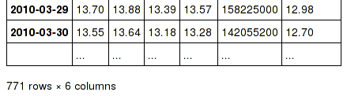

What’s New¶
These are new features and improvements of note in each release.
v0.13.1 (February 3, 2014)¶
This is a minor release from 0.13.0 and includes a small number of API changes, several new features, enhancements, and performance improvements along with a large number of bug fixes. We recommend that all users upgrade to this version.
Highlights include:
- Added infer_datetime_format keyword to read_csv/to_datetime to allow speedups for homogeneously formatted datetimes.
- Will intelligently limit display precision for datetime/timedelta formats.
- Enhanced Panel apply() method.
- Suggested tutorials in new Tutorials section.
- Our pandas ecosystem is growing, We now feature related projects in a new Pandas Ecosystem section.
- Much work has been taking place on improving the docs, and a new Contributing section has been added.
- Even though it may only be of interest to devs, we <3 our new CI status page: ScatterCI.
Warning
0.13.1 fixes a bug that was caused by a combination of having numpy < 1.8, and doing chained assignment on a string-like array. Please review the docs, chained indexing can have unexpected results and should generally be avoided.
This would previously segfault:
In [1]: df = DataFrame(dict(A = np.array(['foo','bar','bah','foo','bar'])))
In [2]: df['A'].iloc[0] = np.nan
In [3]: df
Out[3]:
A
0 NaN
1 bar
2 bah
3 foo
4 bar
[5 rows x 1 columns]
The recommended way to do this type of assignment is:
In [4]: df = DataFrame(dict(A = np.array(['foo','bar','bah','foo','bar'])))
In [5]: df.ix[0,'A'] = np.nan
In [6]: df
Out[6]:
A
0 NaN
1 bar
2 bah
3 foo
4 bar
[5 rows x 1 columns]
Output Formatting Enhancements¶
df.info() view now display dtype info per column (GH5682)
df.info() now honors the option max_info_rows, to disable null counts for large frames (GH5974)
In [7]: max_info_rows = pd.get_option('max_info_rows') In [8]: df = DataFrame(dict(A = np.random.randn(10), ...: B = np.random.randn(10), ...: C = date_range('20130101',periods=10))) ...: In [9]: df.iloc[3:6,[0,2]] = np.nan
# set to not display the null counts In [10]: pd.set_option('max_info_rows',0) In [11]: df.info() <class 'pandas.core.frame.DataFrame'> Int64Index: 10 entries, 0 to 9 Data columns (total 3 columns): A float64 B float64 C datetime64[ns] dtypes: datetime64[ns](1), float64(2)
# this is the default (same as in 0.13.0) In [12]: pd.set_option('max_info_rows',max_info_rows) In [13]: df.info() <class 'pandas.core.frame.DataFrame'> Int64Index: 10 entries, 0 to 9 Data columns (total 3 columns): A 7 non-null float64 B 10 non-null float64 C 7 non-null datetime64[ns] dtypes: datetime64[ns](1), float64(2)
Add show_dimensions display option for the new DataFrame repr to control whether the dimensions print.
In [14]: df = DataFrame([[1, 2], [3, 4]]) In [15]: pd.set_option('show_dimensions', False) In [16]: df Out[16]: 0 1 0 1 2 1 3 4 In [17]: pd.set_option('show_dimensions', True) In [18]: df Out[18]: 0 1 0 1 2 1 3 4 [2 rows x 2 columns]
The ArrayFormatter for datetime and timedelta64 now intelligently limit precision based on the values in the array (GH3401)
Previously output might look like:
age today diff 0 2001-01-01 00:00:00 2013-04-19 00:00:00 4491 days, 00:00:00 1 2004-06-01 00:00:00 2013-04-19 00:00:00 3244 days, 00:00:00
Now the output looks like:
In [19]: df = DataFrame([ Timestamp('20010101'), ....: Timestamp('20040601') ], columns=['age']) ....: In [20]: df['today'] = Timestamp('20130419') In [21]: df['diff'] = df['today']-df['age'] In [22]: df Out[22]: age today diff 0 2001-01-01 2013-04-19 4491 days 1 2004-06-01 2013-04-19 3244 days [2 rows x 3 columns]
API changes¶
Add -NaN and -nan to the default set of NA values (GH5952). See NA Values.
Added Series.str.get_dummies vectorized string method (GH6021), to extract dummy/indicator variables for separated string columns:
In [23]: s = Series(['a', 'a|b', np.nan, 'a|c']) In [24]: s.str.get_dummies(sep='|') Out[24]: a b c 0 1 0 0 1 1 1 0 2 0 0 0 3 1 0 1 [4 rows x 3 columns]
Added the NDFrame.equals() method to compare if two NDFrames are equal have equal axes, dtypes, and values. Added the array_equivalent function to compare if two ndarrays are equal. NaNs in identical locations are treated as equal. (GH5283) See also the docs for a motivating example.
In [25]: df = DataFrame({'col':['foo', 0, np.nan]}).sort() In [26]: df2 = DataFrame({'col':[np.nan, 0, 'foo']}, index=[2,1,0]) In [27]: df.equals(df) Out[27]: True In [28]: import pandas.core.common as com In [29]: com.array_equivalent(np.array([0, np.nan]), np.array([0, np.nan])) Out[29]: True In [30]: np.array_equal(np.array([0, np.nan]), np.array([0, np.nan])) Out[30]: False
DataFrame.apply will use the reduce argument to determine whether a Series or a DataFrame should be returned when the DataFrame is empty (GH6007).
Previously, calling DataFrame.apply an empty DataFrame would return either a DataFrame if there were no columns, or the function being applied would be called with an empty Series to guess whether a Series or DataFrame should be returned:
In [31]: def applied_func(col): ....: print "Apply function being called with:", col ....: return col.sum() ....: In [32]: empty = DataFrame(columns=['a', 'b']) In [33]: empty.apply(applied_func) Apply function being called with: Series([], dtype: float64) Out[33]: a NaN b NaN dtype: float64
Now, when apply is called on an empty DataFrame: if the reduce argument is True a Series will returned, if it is False a DataFrame will be returned, and if it is None (the default) the function being applied will be called with an empty series to try and guess the return type.
In [34]: empty.apply(applied_func, reduce=True) Out[34]: a NaN b NaN dtype: float64 In [35]: empty.apply(applied_func, reduce=False) Out[35]: Empty DataFrame Columns: [a, b] Index: [] [0 rows x 2 columns]
Prior Version Deprecations/Changes¶
There are no announced changes in 0.13 or prior that are taking effect as of 0.13.1
Deprecations¶
There are no deprecations of prior behavior in 0.13.1
Enhancements¶
pd.read_csv and pd.to_datetime learned a new infer_datetime_format keyword which greatly improves parsing perf in many cases. Thanks to @lexual for suggesting and @danbirken for rapidly implementing. (GH5490, GH6021)
If parse_dates is enabled and this flag is set, pandas will attempt to infer the format of the datetime strings in the columns, and if it can be inferred, switch to a faster method of parsing them. In some cases this can increase the parsing speed by ~5-10x.
# Try to infer the format for the index column df = pd.read_csv('foo.csv', index_col=0, parse_dates=True, infer_datetime_format=True)
date_format and datetime_format keywords can now be specified when writing to excel files (GH4133)
MultiIndex.from_product convenience function for creating a MultiIndex from the cartesian product of a set of iterables (GH6055):
In [36]: shades = ['light', 'dark'] In [37]: colors = ['red', 'green', 'blue'] In [38]: MultiIndex.from_product([shades, colors], names=['shade', 'color']) Out[38]: MultiIndex(levels=[[u'dark', u'light'], [u'blue', u'green', u'red']], labels=[[1, 1, 1, 0, 0, 0], [2, 1, 0, 2, 1, 0]], names=[u'shade', u'color'])
Panel apply() will work on non-ufuncs. See the docs.
In [39]: import pandas.util.testing as tm In [40]: panel = tm.makePanel(5) In [41]: panel Out[41]: <class 'pandas.core.panel.Panel'> Dimensions: 3 (items) x 5 (major_axis) x 4 (minor_axis) Items axis: ItemA to ItemC Major_axis axis: 2000-01-03 00:00:00 to 2000-01-07 00:00:00 Minor_axis axis: A to D In [42]: panel['ItemA'] Out[42]: A B C D 2000-01-03 -0.700262 -0.159861 -0.178315 1.495435 2000-01-04 -0.237922 0.286230 0.386127 1.785587 2000-01-05 0.803216 -0.311358 0.309259 1.135875 2000-01-06 0.323302 1.144951 -0.328860 0.699592 2000-01-07 -0.419578 -0.726740 0.056344 0.245373 [5 rows x 4 columns]
Specifying an apply that operates on a Series (to return a single element)
In [43]: panel.apply(lambda x: x.dtype, axis='items') Out[43]: A B C D 2000-01-03 float64 float64 float64 float64 2000-01-04 float64 float64 float64 float64 2000-01-05 float64 float64 float64 float64 2000-01-06 float64 float64 float64 float64 2000-01-07 float64 float64 float64 float64 [5 rows x 4 columns]
A similar reduction type operation
In [44]: panel.apply(lambda x: x.sum(), axis='major_axis') Out[44]: ItemA ItemB ItemC A -0.231243 1.074220 0.542019 B 0.233222 0.968872 -4.067618 C 0.244554 2.925382 -1.702876 D 5.361861 -0.725465 -2.106863 [4 rows x 3 columns]
This is equivalent to
In [45]: panel.sum('major_axis') Out[45]: ItemA ItemB ItemC A -0.231243 1.074220 0.542019 B 0.233222 0.968872 -4.067618 C 0.244554 2.925382 -1.702876 D 5.361861 -0.725465 -2.106863 [4 rows x 3 columns]
A transformation operation that returns a Panel, but is computing the z-score across the major_axis
In [46]: result = panel.apply( ....: lambda x: (x-x.mean())/x.std(), ....: axis='major_axis') ....: In [47]: result Out[47]: <class 'pandas.core.panel.Panel'> Dimensions: 3 (items) x 5 (major_axis) x 4 (minor_axis) Items axis: ItemA to ItemC Major_axis axis: 2000-01-03 00:00:00 to 2000-01-07 00:00:00 Minor_axis axis: A to D In [48]: result['ItemA'] Out[48]: A B C D 2000-01-03 -1.081788 -0.289691 -0.741235 0.687524 2000-01-04 -0.317043 0.336096 1.100033 1.159054 2000-01-05 1.405080 -0.502213 0.849282 0.103199 2000-01-06 0.611265 1.540729 -1.232327 -0.605810 2000-01-07 -0.617515 -1.084921 0.024246 -1.343967 [5 rows x 4 columns]
Panel apply() operating on cross-sectional slabs. (GH1148)
In [49]: f = lambda x: ((x.T-x.mean(1))/x.std(1)).T In [50]: result = panel.apply(f, axis = ['items','major_axis']) In [51]: result Out[51]: <class 'pandas.core.panel.Panel'> Dimensions: 4 (items) x 5 (major_axis) x 3 (minor_axis) Items axis: A to D Major_axis axis: 2000-01-03 00:00:00 to 2000-01-07 00:00:00 Minor_axis axis: ItemA to ItemC In [52]: result.loc[:,:,'ItemA'] Out[52]: A B C D 2000-01-03 -0.842839 0.453596 -0.199453 0.822702 2000-01-04 -1.013312 -1.058639 0.769984 0.974988 2000-01-05 1.140828 0.267052 -0.593754 1.121503 2000-01-06 0.630766 1.073118 -0.687542 1.008418 2000-01-07 -0.895065 -0.181779 -0.162569 -0.052844 [5 rows x 4 columns]
This is equivalent to the following
In [53]: result = Panel(dict([ (ax,f(panel.loc[:,:,ax])) ....: for ax in panel.minor_axis ])) ....: In [54]: result Out[54]: <class 'pandas.core.panel.Panel'> Dimensions: 4 (items) x 5 (major_axis) x 3 (minor_axis) Items axis: A to D Major_axis axis: 2000-01-03 00:00:00 to 2000-01-07 00:00:00 Minor_axis axis: ItemA to ItemC In [55]: result.loc[:,:,'ItemA'] Out[55]: A B C D 2000-01-03 -0.842839 0.453596 -0.199453 0.822702 2000-01-04 -1.013312 -1.058639 0.769984 0.974988 2000-01-05 1.140828 0.267052 -0.593754 1.121503 2000-01-06 0.630766 1.073118 -0.687542 1.008418 2000-01-07 -0.895065 -0.181779 -0.162569 -0.052844 [5 rows x 4 columns]
Performance¶
Performance improvements for 0.13.1
- Series datetime/timedelta binary operations (GH5801)
- DataFrame count/dropna for axis=1
- Series.str.contains now has a regex=False keyword which can be faster for plain (non-regex) string patterns. (GH5879)
- Series.str.extract (GH5944)
- dtypes/ftypes methods (GH5968)
- indexing with object dtypes (GH5968)
- DataFrame.apply (GH6013)
- Regression in JSON IO (GH5765)
- Index construction from Series (GH6150)
Experimental¶
There are no experimental changes in 0.13.1
Bug Fixes¶
See V0.13.1 Bug Fixes for an extensive list of bugs that have been fixed in 0.13.1.
See the full release notes or issue tracker on GitHub for a complete list of all API changes, Enhancements and Bug Fixes.
v0.13.0 (January 3, 2014)¶
This is a major release from 0.12.0 and includes a number of API changes, several new features and enhancements along with a large number of bug fixes.
Highlights include:
- support for a new index type Float64Index, and other Indexing enhancements
- HDFStore has a new string based syntax for query specification
- support for new methods of interpolation
- updated timedelta operations
- a new string manipulation method extract
- Nanosecond support for Offsets
- isin for DataFrames
Several experimental features are added, including:
- new eval/query methods for expression evaluation
- support for msgpack serialization
- an i/o interface to Google’s BigQuery
Their are several new or updated docs sections including:
- Comparison with SQL, which should be useful for those familiar with SQL but still learning pandas.
- Comparison with R, idiom translations from R to pandas.
- Enhancing Performance, ways to enhance pandas performance with eval/query.
Warning
In 0.13.0 Series has internally been refactored to no longer sub-class ndarray but instead subclass NDFrame, similar to the rest of the pandas containers. This should be a transparent change with only very limited API implications. See Internal Refactoring
API changes¶
read_excel now supports an integer in its sheetname argument giving the index of the sheet to read in (GH4301).
Text parser now treats anything that reads like inf (“inf”, “Inf”, “-Inf”, “iNf”, etc.) as infinity. (GH4220, GH4219), affecting read_table, read_csv, etc.
pandas now is Python 2/3 compatible without the need for 2to3 thanks to @jtratner. As a result, pandas now uses iterators more extensively. This also led to the introduction of substantive parts of the Benjamin Peterson’s six library into compat. (GH4384, GH4375, GH4372)
pandas.util.compat and pandas.util.py3compat have been merged into pandas.compat. pandas.compat now includes many functions allowing 2/3 compatibility. It contains both list and iterator versions of range, filter, map and zip, plus other necessary elements for Python 3 compatibility. lmap, lzip, lrange and lfilter all produce lists instead of iterators, for compatibility with numpy, subscripting and pandas constructors.(GH4384, GH4375, GH4372)
Series.get with negative indexers now returns the same as [] (GH4390)
Changes to how Index and MultiIndex handle metadata (levels, labels, and names) (GH4039):
# previously, you would have set levels or labels directly index.levels = [[1, 2, 3, 4], [1, 2, 4, 4]] # now, you use the set_levels or set_labels methods index = index.set_levels([[1, 2, 3, 4], [1, 2, 4, 4]]) # similarly, for names, you can rename the object # but setting names is not deprecated index = index.set_names(["bob", "cranberry"]) # and all methods take an inplace kwarg - but return None index.set_names(["bob", "cranberry"], inplace=True)
All division with NDFrame objects is now truedivision, regardless of the future import. This means that operating on pandas objects will by default use floating point division, and return a floating point dtype. You can use // and floordiv to do integer division.
Integer division
In [3]: arr = np.array([1, 2, 3, 4]) In [4]: arr2 = np.array([5, 3, 2, 1]) In [5]: arr / arr2 Out[5]: array([0, 0, 1, 4]) In [6]: Series(arr) // Series(arr2) Out[6]: 0 0 1 0 2 1 3 4 dtype: int64
True Division
In [7]: pd.Series(arr) / pd.Series(arr2) # no future import required Out[7]: 0 0.200000 1 0.666667 2 1.500000 3 4.000000 dtype: float64
Infer and downcast dtype if downcast='infer' is passed to fillna/ffill/bfill (GH4604)
__nonzero__ for all NDFrame objects, will now raise a ValueError, this reverts back to (GH1073, GH4633) behavior. See gotchas for a more detailed discussion.
This prevents doing boolean comparison on entire pandas objects, which is inherently ambiguous. These all will raise a ValueError.
if df: .... df1 and df2 s1 and s2
Added the .bool() method to NDFrame objects to facilitate evaluating of single-element boolean Series:
In [1]: Series([True]).bool() Out[1]: True In [2]: Series([False]).bool() Out[2]: False In [3]: DataFrame([[True]]).bool() Out[3]: True In [4]: DataFrame([[False]]).bool() Out[4]: False
All non-Index NDFrames (Series, DataFrame, Panel, Panel4D, SparsePanel, etc.), now support the entire set of arithmetic operators and arithmetic flex methods (add, sub, mul, etc.). SparsePanel does not support pow or mod with non-scalars. (GH3765)
Series and DataFrame now have a mode() method to calculate the statistical mode(s) by axis/Series. (GH5367)
Chained assignment will now by default warn if the user is assigning to a copy. This can be changed with the option mode.chained_assignment, allowed options are raise/warn/None. See the docs.
In [5]: dfc = DataFrame({'A':['aaa','bbb','ccc'],'B':[1,2,3]}) In [6]: pd.set_option('chained_assignment','warn')
The following warning / exception will show if this is attempted.
In [7]: dfc.loc[0]['A'] = 1111
Traceback (most recent call last) ... SettingWithCopyWarning: A value is trying to be set on a copy of a slice from a DataFrame. Try using .loc[row_index,col_indexer] = value instead
Here is the correct method of assignment.
In [8]: dfc.loc[0,'A'] = 11 In [9]: dfc Out[9]: A B 0 11 1 1 bbb 2 2 ccc 3 [3 rows x 2 columns]
- Panel.reindex has the following call signature Panel.reindex(items=None, major_axis=None, minor_axis=None, **kwargs)
to conform with other NDFrame objects. See Internal Refactoring for more information.
- Series.argmin and Series.argmax are now aliased to Series.idxmin and Series.idxmax. These return the index of the
min or max element respectively. Prior to 0.13.0 these would return the position of the min / max element. (GH6214)
Prior Version Deprecations/Changes¶
These were announced changes in 0.12 or prior that are taking effect as of 0.13.0
- Remove deprecated Factor (GH3650)
- Remove deprecated set_printoptions/reset_printoptions (GH3046)
- Remove deprecated _verbose_info (GH3215)
- Remove deprecated read_clipboard/to_clipboard/ExcelFile/ExcelWriter from pandas.io.parsers (GH3717) These are available as functions in the main pandas namespace (e.g. pd.read_clipboard)
- default for tupleize_cols is now False for both to_csv and read_csv. Fair warning in 0.12 (GH3604)
- default for display.max_seq_len is now 100 rather then None. This activates truncated display (”...”) of long sequences in various places. (GH3391)
Deprecations¶
Deprecated in 0.13.0
- deprecated iterkv, which will be removed in a future release (this was an alias of iteritems used to bypass 2to3‘s changes). (GH4384, GH4375, GH4372)
- deprecated the string method match, whose role is now performed more idiomatically by extract. In a future release, the default behavior of match will change to become analogous to contains, which returns a boolean indexer. (Their distinction is strictness: match relies on re.match while contains relies on re.search.) In this release, the deprecated behavior is the default, but the new behavior is available through the keyword argument as_indexer=True.
Indexing API Changes¶
Prior to 0.13, it was impossible to use a label indexer (.loc/.ix) to set a value that was not contained in the index of a particular axis. (GH2578). See the docs
In the Series case this is effectively an appending operation
In [10]: s = Series([1,2,3])
In [11]: s
Out[11]:
0 1
1 2
2 3
dtype: int64
In [12]: s[5] = 5.
In [13]: s
Out[13]:
0 1
1 2
2 3
5 5
dtype: float64
In [14]: dfi = DataFrame(np.arange(6).reshape(3,2),
....: columns=['A','B'])
....:
In [15]: dfi
Out[15]:
A B
0 0 1
1 2 3
2 4 5
[3 rows x 2 columns]
This would previously KeyError
In [16]: dfi.loc[:,'C'] = dfi.loc[:,'A']
In [17]: dfi
Out[17]:
A B C
0 0 1 0
1 2 3 2
2 4 5 4
[3 rows x 3 columns]
This is like an append operation.
In [18]: dfi.loc[3] = 5
In [19]: dfi
Out[19]:
A B C
0 0 1 0
1 2 3 2
2 4 5 4
3 5 5 5
[4 rows x 3 columns]
A Panel setting operation on an arbitrary axis aligns the input to the Panel
In [20]: p = pd.Panel(np.arange(16).reshape(2,4,2),
....: items=['Item1','Item2'],
....: major_axis=pd.date_range('2001/1/12',periods=4),
....: minor_axis=['A','B'],dtype='float64')
....:
In [21]: p
Out[21]:
<class 'pandas.core.panel.Panel'>
Dimensions: 2 (items) x 4 (major_axis) x 2 (minor_axis)
Items axis: Item1 to Item2
Major_axis axis: 2001-01-12 00:00:00 to 2001-01-15 00:00:00
Minor_axis axis: A to B
In [22]: p.loc[:,:,'C'] = Series([30,32],index=p.items)
In [23]: p
Out[23]:
<class 'pandas.core.panel.Panel'>
Dimensions: 2 (items) x 4 (major_axis) x 3 (minor_axis)
Items axis: Item1 to Item2
Major_axis axis: 2001-01-12 00:00:00 to 2001-01-15 00:00:00
Minor_axis axis: A to C
In [24]: p.loc[:,:,'C']
Out[24]:
Item1 Item2
2001-01-12 30 32
2001-01-13 30 32
2001-01-14 30 32
2001-01-15 30 32
[4 rows x 2 columns]
Float64Index API Change¶
Added a new index type, Float64Index. This will be automatically created when passing floating values in index creation. This enables a pure label-based slicing paradigm that makes [],ix,loc for scalar indexing and slicing work exactly the same. See the docs, (GH263)
Construction is by default for floating type values.
In [25]: index = Index([1.5, 2, 3, 4.5, 5]) In [26]: index Out[26]: Float64Index([1.5, 2.0, 3.0, 4.5, 5.0], dtype='object') In [27]: s = Series(range(5),index=index) In [28]: s Out[28]: 1.5 0 2.0 1 3.0 2 4.5 3 5.0 4 dtype: int64
Scalar selection for [],.ix,.loc will always be label based. An integer will match an equal float index (e.g. 3 is equivalent to 3.0)
In [29]: s[3] Out[29]: 2 In [30]: s.ix[3] Out[30]: 2 In [31]: s.loc[3] Out[31]: 2
The only positional indexing is via iloc
In [32]: s.iloc[3] Out[32]: 3
A scalar index that is not found will raise KeyError
Slicing is ALWAYS on the values of the index, for [],ix,loc and ALWAYS positional with iloc
In [33]: s[2:4] Out[33]: 2 1 3 2 dtype: int64 In [34]: s.ix[2:4] Out[34]: 2 1 3 2 dtype: int64 In [35]: s.loc[2:4] Out[35]: 2 1 3 2 dtype: int64 In [36]: s.iloc[2:4] Out[36]: 3.0 2 4.5 3 dtype: int64
In float indexes, slicing using floats are allowed
In [37]: s[2.1:4.6] Out[37]: 3.0 2 4.5 3 dtype: int64 In [38]: s.loc[2.1:4.6] Out[38]: 3.0 2 4.5 3 dtype: int64
Indexing on other index types are preserved (and positional fallback for [],ix), with the exception, that floating point slicing on indexes on non Float64Index will now raise a TypeError.
In [1]: Series(range(5))[3.5] TypeError: the label [3.5] is not a proper indexer for this index type (Int64Index) In [1]: Series(range(5))[3.5:4.5] TypeError: the slice start [3.5] is not a proper indexer for this index type (Int64Index)
Using a scalar float indexer will be deprecated in a future version, but is allowed for now.
In [3]: Series(range(5))[3.0] Out[3]: 3
HDFStore API Changes¶
Query Format Changes. A much more string-like query format is now supported. See the docs.
In [39]: path = 'test.h5' In [40]: dfq = DataFrame(randn(10,4), ....: columns=list('ABCD'), ....: index=date_range('20130101',periods=10)) ....: In [41]: dfq.to_hdf(path,'dfq',format='table',data_columns=True)
Use boolean expressions, with in-line function evaluation.
In [42]: read_hdf(path,'dfq', ....: where="index>Timestamp('20130104') & columns=['A', 'B']") ....: Out[42]: A B 2013-01-05 -0.063353 -1.719595 2013-01-06 1.018307 -1.423334 2013-01-07 0.602286 0.935929 2013-01-08 0.329999 0.894066 2013-01-09 -0.933857 -0.030896 2013-01-10 -0.012390 0.253387 [6 rows x 2 columns]
Use an inline column reference
In [43]: read_hdf(path,'dfq', ....: where="A>0 or C>0") ....: Out[43]: A B C D 2013-01-01 0.066932 -0.929963 0.304346 0.790176 2013-01-02 0.518267 0.530211 0.289180 1.356091 2013-01-03 0.287746 1.371943 -0.284844 0.866407 2013-01-04 0.229041 0.797449 0.153394 1.250650 2013-01-05 -0.063353 -1.719595 1.078142 -1.157042 2013-01-06 1.018307 -1.423334 0.600642 2.202617 2013-01-07 0.602286 0.935929 -0.091967 -1.086482 2013-01-08 0.329999 0.894066 0.196023 1.355471 2013-01-09 -0.933857 -0.030896 1.850906 -0.402282 2013-01-10 -0.012390 0.253387 0.862390 -0.054772 [10 rows x 4 columns]
the format keyword now replaces the table keyword; allowed values are fixed(f) or table(t) the same defaults as prior < 0.13.0 remain, e.g. put implies fixed format and append implies table format. This default format can be set as an option by setting io.hdf.default_format.
In [44]: path = 'test.h5' In [45]: df = DataFrame(randn(10,2)) In [46]: df.to_hdf(path,'df_table',format='table') In [47]: df.to_hdf(path,'df_table2',append=True) In [48]: df.to_hdf(path,'df_fixed') In [49]: with get_store(path) as store: ....: print(store) ....: <class 'pandas.io.pytables.HDFStore'> File path: test.h5 /df_fixed frame (shape->[10,2]) /df_table frame_table (typ->appendable,nrows->10,ncols->2,indexers->[index]) /df_table2 frame_table (typ->appendable,nrows->10,ncols->2,indexers->[index])
Significant table writing performance improvements
handle a passed Series in table format (GH4330)
can now serialize a timedelta64[ns] dtype in a table (GH3577), See the docs.
added an is_open property to indicate if the underlying file handle is_open; a closed store will now report ‘CLOSED’ when viewing the store (rather than raising an error) (GH4409)
a close of a HDFStore now will close that instance of the HDFStore but will only close the actual file if the ref count (by PyTables) w.r.t. all of the open handles are 0. Essentially you have a local instance of HDFStore referenced by a variable. Once you close it, it will report closed. Other references (to the same file) will continue to operate until they themselves are closed. Performing an action on a closed file will raise ClosedFileError
In [50]: path = 'test.h5' In [51]: df = DataFrame(randn(10,2)) In [52]: store1 = HDFStore(path) In [53]: store2 = HDFStore(path) In [54]: store1.append('df',df) In [55]: store2.append('df2',df) In [56]: store1 Out[56]: <class 'pandas.io.pytables.HDFStore'> File path: test.h5 /df frame_table (typ->appendable,nrows->10,ncols->2,indexers->[index]) /df2 frame_table (typ->appendable,nrows->10,ncols->2,indexers->[index]) In [57]: store2 Out[57]: <class 'pandas.io.pytables.HDFStore'> File path: test.h5 /df frame_table (typ->appendable,nrows->10,ncols->2,indexers->[index]) /df2 frame_table (typ->appendable,nrows->10,ncols->2,indexers->[index]) In [58]: store1.close() In [59]: store2 Out[59]: <class 'pandas.io.pytables.HDFStore'> File path: test.h5 /df frame_table (typ->appendable,nrows->10,ncols->2,indexers->[index]) /df2 frame_table (typ->appendable,nrows->10,ncols->2,indexers->[index]) In [60]: store2.close() In [61]: store2 Out[61]: <class 'pandas.io.pytables.HDFStore'> File path: test.h5 File is CLOSED
removed the _quiet attribute, replace by a DuplicateWarning if retrieving duplicate rows from a table (GH4367)
removed the warn argument from open. Instead a PossibleDataLossError exception will be raised if you try to use mode='w' with an OPEN file handle (GH4367)
allow a passed locations array or mask as a where condition (GH4467). See the docs for an example.
add the keyword dropna=True to append to change whether ALL nan rows are not written to the store (default is True, ALL nan rows are NOT written), also settable via the option io.hdf.dropna_table (GH4625)
pass thru store creation arguments; can be used to support in-memory stores
DataFrame repr Changes¶
The HTML and plain text representations of DataFrame now show a truncated view of the table once it exceeds a certain size, rather than switching to the short info view (GH4886, GH5550). This makes the representation more consistent as small DataFrames get larger.
To get the info view, call DataFrame.info(). If you prefer the info view as the repr for large DataFrames, you can set this by running set_option('display.large_repr', 'info').
Enhancements¶
df.to_clipboard() learned a new excel keyword that let’s you paste df data directly into excel (enabled by default). (GH5070).
read_html now raises a URLError instead of catching and raising a ValueError (GH4303, GH4305)
Added a test for read_clipboard() and to_clipboard() (GH4282)
Clipboard functionality now works with PySide (GH4282)
Added a more informative error message when plot arguments contain overlapping color and style arguments (GH4402)
to_dict now takes records as a possible outtype. Returns an array of column-keyed dictionaries. (GH4936)
NaN handing in get_dummies (GH4446) with dummy_na
# previously, nan was erroneously counted as 2 here # now it is not counted at all In [62]: get_dummies([1, 2, np.nan]) Out[62]: 1 2 0 1 0 1 0 1 2 0 0 [3 rows x 2 columns] # unless requested In [63]: get_dummies([1, 2, np.nan], dummy_na=True) Out[63]: 1 2 NaN 0 1 0 0 1 0 1 0 2 0 0 1 [3 rows x 3 columns]
timedelta64[ns] operations. See the docs.
Warning
Most of these operations require numpy >= 1.7
Using the new top-level to_timedelta, you can convert a scalar or array from the standard timedelta format (produced by to_csv) into a timedelta type (np.timedelta64 in nanoseconds).
In [64]: to_timedelta('1 days 06:05:01.00003') Out[64]: numpy.timedelta64(108301000030000,'ns') In [65]: to_timedelta('15.5us') Out[65]: numpy.timedelta64(15500,'ns') In [66]: to_timedelta(['1 days 06:05:01.00003','15.5us','nan']) Out[66]: 0 1 days, 06:05:01.000030 1 0 days, 00:00:00.000016 2 NaT dtype: timedelta64[ns] In [67]: to_timedelta(np.arange(5),unit='s') Out[67]: 0 00:00:00 1 00:00:01 2 00:00:02 3 00:00:03 4 00:00:04 dtype: timedelta64[ns] In [68]: to_timedelta(np.arange(5),unit='d') Out[68]: 0 0 days 1 1 days 2 2 days 3 3 days 4 4 days dtype: timedelta64[ns]
A Series of dtype timedelta64[ns] can now be divided by another timedelta64[ns] object, or astyped to yield a float64 dtyped Series. This is frequency conversion. See the docs for the docs.
In [69]: from datetime import timedelta In [70]: td = Series(date_range('20130101',periods=4))-Series(date_range('20121201',periods=4)) In [71]: td[2] += np.timedelta64(timedelta(minutes=5,seconds=3)) In [72]: td[3] = np.nan In [73]: td Out[73]: 0 31 days, 00:00:00 1 31 days, 00:00:00 2 31 days, 00:05:03 3 NaT dtype: timedelta64[ns] # to days In [74]: td / np.timedelta64(1,'D') Out[74]: 0 31.000000 1 31.000000 2 31.003507 3 NaN dtype: float64 In [75]: td.astype('timedelta64[D]') Out[75]: 0 31 1 31 2 31 3 NaN dtype: float64 # to seconds In [76]: td / np.timedelta64(1,'s') Out[76]: 0 2678400 1 2678400 2 2678703 3 NaN dtype: float64 In [77]: td.astype('timedelta64[s]') Out[77]: 0 2678400 1 2678400 2 2678703 3 NaN dtype: float64
Dividing or multiplying a timedelta64[ns] Series by an integer or integer Series
In [78]: td * -1 Out[78]: 0 -31 days, 00:00:00 1 -31 days, 00:00:00 2 -31 days, 00:05:03 3 NaT dtype: timedelta64[ns] In [79]: td * Series([1,2,3,4]) Out[79]: 0 31 days, 00:00:00 1 62 days, 00:00:00 2 93 days, 00:15:09 3 NaT dtype: timedelta64[ns]
Absolute DateOffset objects can act equivalently to timedeltas
In [80]: from pandas import offsets In [81]: td + offsets.Minute(5) + offsets.Milli(5) Out[81]: 0 31 days, 00:05:00.005000 1 31 days, 00:05:00.005000 2 31 days, 00:10:03.005000 3 NaT dtype: timedelta64[ns]
Fillna is now supported for timedeltas
In [82]: td.fillna(0) Out[82]: 0 31 days, 00:00:00 1 31 days, 00:00:00 2 31 days, 00:05:03 3 0 days, 00:00:00 dtype: timedelta64[ns] In [83]: td.fillna(timedelta(days=1,seconds=5)) Out[83]: 0 31 days, 00:00:00 1 31 days, 00:00:00 2 31 days, 00:05:03 3 1 days, 00:00:05 dtype: timedelta64[ns]
You can do numeric reduction operations on timedeltas.
In [84]: td.mean() Out[84]: 0 31 days, 00:01:41 dtype: timedelta64[ns] In [85]: td.quantile(.1) Out[85]: numpy.timedelta64(2678400000000000,'ns')
plot(kind='kde') now accepts the optional parameters bw_method and ind, passed to scipy.stats.gaussian_kde() (for scipy >= 0.11.0) to set the bandwidth, and to gkde.evaluate() to specify the indices at which it is evaluated, respectively. See scipy docs. (GH4298)
DataFrame constructor now accepts a numpy masked record array (GH3478)
The new vectorized string method extract return regular expression matches more conveniently.
In [86]: Series(['a1', 'b2', 'c3']).str.extract('[ab](\d)') Out[86]: 0 1 1 2 2 NaN dtype: object
Elements that do not match return NaN. Extracting a regular expression with more than one group returns a DataFrame with one column per group.
In [87]: Series(['a1', 'b2', 'c3']).str.extract('([ab])(\d)') Out[87]: 0 1 0 a 1 1 b 2 2 NaN NaN [3 rows x 2 columns]
Elements that do not match return a row of NaN. Thus, a Series of messy strings can be converted into a like-indexed Series or DataFrame of cleaned-up or more useful strings, without necessitating get() to access tuples or re.match objects.
Named groups like
In [88]: Series(['a1', 'b2', 'c3']).str.extract( ....: '(?P<letter>[ab])(?P<digit>\d)') ....: Out[88]: letter digit 0 a 1 1 b 2 2 NaN NaN [3 rows x 2 columns]
and optional groups can also be used.
In [89]: Series(['a1', 'b2', '3']).str.extract( ....: '(?P<letter>[ab])?(?P<digit>\d)') ....: Out[89]: letter digit 0 a 1 1 b 2 2 NaN 3 [3 rows x 2 columns]
read_stata now accepts Stata 13 format (GH4291)
read_fwf now infers the column specifications from the first 100 rows of the file if the data has correctly separated and properly aligned columns using the delimiter provided to the function (GH4488).
support for nanosecond times as an offset
Warning
These operations require numpy >= 1.7
Period conversions in the range of seconds and below were reworked and extended up to nanoseconds. Periods in the nanosecond range are now available.
In [90]: date_range('2013-01-01', periods=5, freq='5N') Out[90]: <class 'pandas.tseries.index.DatetimeIndex'> [2013-01-01 00:00:00, ..., 2013-01-01 00:00:00.000000020] Length: 5, Freq: 5N, Timezone: None
or with frequency as offset
In [91]: date_range('2013-01-01', periods=5, freq=pd.offsets.Nano(5)) Out[91]: <class 'pandas.tseries.index.DatetimeIndex'> [2013-01-01 00:00:00, ..., 2013-01-01 00:00:00.000000020] Length: 5, Freq: 5N, Timezone: None
Timestamps can be modified in the nanosecond range
In [92]: t = Timestamp('20130101 09:01:02') In [93]: t + pd.datetools.Nano(123) Out[93]: Timestamp('2013-01-01 09:01:02.000000123', tz=None)
A new method, isin for DataFrames, which plays nicely with boolean indexing. The argument to isin, what we’re comparing the DataFrame to, can be a DataFrame, Series, dict, or array of values. See the docs for more.
To get the rows where any of the conditions are met:
In [94]: dfi = DataFrame({'A': [1, 2, 3, 4], 'B': ['a', 'b', 'f', 'n']}) In [95]: dfi Out[95]: A B 0 1 a 1 2 b 2 3 f 3 4 n [4 rows x 2 columns] In [96]: other = DataFrame({'A': [1, 3, 3, 7], 'B': ['e', 'f', 'f', 'e']}) In [97]: mask = dfi.isin(other) In [98]: mask Out[98]: A B 0 True False 1 False False 2 True True 3 False False [4 rows x 2 columns] In [99]: dfi[mask.any(1)] Out[99]: A B 0 1 a 2 3 f [2 rows x 2 columns]
Series now supports a to_frame method to convert it to a single-column DataFrame (GH5164)
All R datasets listed here http://stat.ethz.ch/R-manual/R-devel/library/datasets/html/00Index.html can now be loaded into Pandas objects
import pandas.rpy.common as com com.load_data('Titanic')
tz_localize can infer a fall daylight savings transition based on the structure of the unlocalized data (GH4230), see the docs
DatetimeIndex is now in the API documentation, see the docs
json_normalize() is a new method to allow you to create a flat table from semi-structured JSON data. See the docs (GH1067)
Added PySide support for the qtpandas DataFrameModel and DataFrameWidget.
Python csv parser now supports usecols (GH4335)
Frequencies gained several new offsets:
DataFrame has a new interpolate method, similar to Series (GH4434, GH1892)
In [100]: df = DataFrame({'A': [1, 2.1, np.nan, 4.7, 5.6, 6.8], .....: 'B': [.25, np.nan, np.nan, 4, 12.2, 14.4]}) .....: In [101]: df.interpolate() Out[101]: A B 0 1.0 0.25 1 2.1 1.50 2 3.4 2.75 3 4.7 4.00 4 5.6 12.20 5 6.8 14.40 [6 rows x 2 columns]
Additionally, the method argument to interpolate has been expanded to include 'nearest', 'zero', 'slinear', 'quadratic', 'cubic', 'barycentric', 'krogh', 'piecewise_polynomial', 'pchip', `polynomial`, 'spline' The new methods require scipy. Consult the Scipy reference guide and documentation for more information about when the various methods are appropriate. See the docs.
Interpolate now also accepts a limit keyword argument. This works similar to fillna‘s limit:
In [102]: ser = Series([1, 3, np.nan, np.nan, np.nan, 11]) In [103]: ser.interpolate(limit=2) Out[103]: 0 1 1 3 2 5 3 7 4 NaN 5 11 dtype: float64
Added wide_to_long panel data convenience function. See the docs.
In [104]: np.random.seed(123) In [105]: df = pd.DataFrame({"A1970" : {0 : "a", 1 : "b", 2 : "c"}, .....: "A1980" : {0 : "d", 1 : "e", 2 : "f"}, .....: "B1970" : {0 : 2.5, 1 : 1.2, 2 : .7}, .....: "B1980" : {0 : 3.2, 1 : 1.3, 2 : .1}, .....: "X" : dict(zip(range(3), np.random.randn(3))) .....: }) .....: In [106]: df["id"] = df.index In [107]: df Out[107]: A1970 A1980 B1970 B1980 X id 0 a d 2.5 3.2 -1.085631 0 1 b e 1.2 1.3 0.997345 1 2 c f 0.7 0.1 0.282978 2 [3 rows x 6 columns] In [108]: wide_to_long(df, ["A", "B"], i="id", j="year") Out[108]: X A B id year 0 1970 -1.085631 a 2.5 1 1970 0.997345 b 1.2 2 1970 0.282978 c 0.7 0 1980 -1.085631 d 3.2 1 1980 0.997345 e 1.3 2 1980 0.282978 f 0.1 [6 rows x 3 columns]
- to_csv now takes a date_format keyword argument that specifies how output datetime objects should be formatted. Datetimes encountered in the index, columns, and values will all have this formatting applied. (GH4313)
- DataFrame.plot will scatter plot x versus y by passing kind='scatter' (GH2215)
- Added support for Google Analytics v3 API segment IDs that also supports v2 IDs. (GH5271)
Experimental¶
The new eval() function implements expression evaluation using numexpr behind the scenes. This results in large speedups for complicated expressions involving large DataFrames/Series. For example,
In [109]: nrows, ncols = 20000, 100 In [110]: df1, df2, df3, df4 = [DataFrame(randn(nrows, ncols)) .....: for _ in xrange(4)] .....:
# eval with NumExpr backend In [111]: %timeit pd.eval('df1 + df2 + df3 + df4') 10 loops, best of 3: 31.6 ms per loop
# pure Python evaluation In [112]: %timeit df1 + df2 + df3 + df4 10 loops, best of 3: 74.8 ms per loop
For more details, see the the docs
Similar to pandas.eval, DataFrame has a new DataFrame.eval method that evaluates an expression in the context of the DataFrame. For example,
In [113]: df = DataFrame(randn(10, 2), columns=['a', 'b']) In [114]: df.eval('a + b') Out[114]: 0 -0.685204 1 1.589745 2 0.325441 3 -1.784153 4 -0.432893 5 0.171850 6 1.895919 7 3.065587 8 -0.092759 9 1.391365 dtype: float64
query() method has been added that allows you to select elements of a DataFrame using a natural query syntax nearly identical to Python syntax. For example,
In [115]: n = 20 In [116]: df = DataFrame(np.random.randint(n, size=(n, 3)), columns=['a', 'b', 'c']) In [117]: df.query('a < b < c') Out[117]: a b c 11 1 5 8 15 8 16 19 [2 rows x 3 columns]
selects all the rows of df where a < b < c evaluates to True. For more details see the the docs.
pd.read_msgpack() and pd.to_msgpack() are now a supported method of serialization of arbitrary pandas (and python objects) in a lightweight portable binary format. See the docs
Warning
Since this is an EXPERIMENTAL LIBRARY, the storage format may not be stable until a future release.
In [118]: df = DataFrame(np.random.rand(5,2),columns=list('AB')) In [119]: df.to_msgpack('foo.msg') In [120]: pd.read_msgpack('foo.msg') Out[120]: A B 0 0.251082 0.017357 1 0.347915 0.929879 2 0.546233 0.203368 3 0.064942 0.031722 4 0.355309 0.524575 [5 rows x 2 columns] In [121]: s = Series(np.random.rand(5),index=date_range('20130101',periods=5)) In [122]: pd.to_msgpack('foo.msg', df, s) In [123]: pd.read_msgpack('foo.msg') Out[123]: [ A B 0 0.251082 0.017357 1 0.347915 0.929879 2 0.546233 0.203368 3 0.064942 0.031722 4 0.355309 0.524575 [5 rows x 2 columns], 2013-01-01 0.022321 2013-01-02 0.227025 2013-01-03 0.383282 2013-01-04 0.193225 2013-01-05 0.110977 Freq: D, dtype: float64]
You can pass iterator=True to iterator over the unpacked results
In [124]: for o in pd.read_msgpack('foo.msg',iterator=True): .....: print o .....: A B 0 0.251082 0.017357 1 0.347915 0.929879 2 0.546233 0.203368 3 0.064942 0.031722 4 0.355309 0.524575 [5 rows x 2 columns] 2013-01-01 0.022321 2013-01-02 0.227025 2013-01-03 0.383282 2013-01-04 0.193225 2013-01-05 0.110977 Freq: D, dtype: float64
pandas.io.gbq provides a simple way to extract from, and load data into, Google’s BigQuery Data Sets by way of pandas DataFrames. BigQuery is a high performance SQL-like database service, useful for performing ad-hoc queries against extremely large datasets. See the docs
from pandas.io import gbq # A query to select the average monthly temperatures in the # in the year 2000 across the USA. The dataset, # publicata:samples.gsod, is available on all BigQuery accounts, # and is based on NOAA gsod data. query = """SELECT station_number as STATION, month as MONTH, AVG(mean_temp) as MEAN_TEMP FROM publicdata:samples.gsod WHERE YEAR = 2000 GROUP BY STATION, MONTH ORDER BY STATION, MONTH ASC""" # Fetch the result set for this query # Your Google BigQuery Project ID # To find this, see your dashboard: # https://code.google.com/apis/console/b/0/?noredirect projectid = xxxxxxxxx; df = gbq.read_gbq(query, project_id = projectid) # Use pandas to process and reshape the dataset df2 = df.pivot(index='STATION', columns='MONTH', values='MEAN_TEMP') df3 = pandas.concat([df2.min(), df2.mean(), df2.max()], axis=1,keys=["Min Tem", "Mean Temp", "Max Temp"])
The resulting DataFrame is:
> df3 Min Tem Mean Temp Max Temp MONTH 1 -53.336667 39.827892 89.770968 2 -49.837500 43.685219 93.437932 3 -77.926087 48.708355 96.099998 4 -82.892858 55.070087 97.317240 5 -92.378261 61.428117 102.042856 6 -77.703334 65.858888 102.900000 7 -87.821428 68.169663 106.510714 8 -89.431999 68.614215 105.500000 9 -86.611112 63.436935 107.142856 10 -78.209677 56.880838 92.103333 11 -50.125000 48.861228 94.996428 12 -50.332258 42.286879 94.396774Warning
To use this module, you will need a BigQuery account. See <https://cloud.google.com/products/big-query> for details.
As of 10/10/13, there is a bug in Google’s API preventing result sets from being larger than 100,000 rows. A patch is scheduled for the week of 10/14/13.
Internal Refactoring¶
In 0.13.0 there is a major refactor primarily to subclass Series from NDFrame, which is the base class currently for DataFrame and Panel, to unify methods and behaviors. Series formerly subclassed directly from ndarray. (GH4080, GH3862, GH816)
Warning
There are two potential incompatibilities from < 0.13.0
Using certain numpy functions would previously return a Series if passed a Series as an argument. This seems only to affect np.ones_like, np.empty_like, np.diff and np.where. These now return ndarrays.
In [125]: s = Series([1,2,3,4])
Numpy Usage
In [126]: np.ones_like(s) Out[126]: array([1, 1, 1, 1]) In [127]: np.diff(s) Out[127]: array([1, 1, 1]) In [128]: np.where(s>1,s,np.nan) Out[128]: array([ nan, 2., 3., 4.])
Pandonic Usage
In [129]: Series(1,index=s.index) Out[129]: 0 1 1 1 2 1 3 1 dtype: int64 In [130]: s.diff() Out[130]: 0 NaN 1 1 2 1 3 1 dtype: float64 In [131]: s.where(s>1) Out[131]: 0 NaN 1 2 2 3 3 4 dtype: float64
Passing a Series directly to a cython function expecting an ndarray type will no long work directly, you must pass Series.values, See Enhancing Performance
Series(0.5) would previously return the scalar 0.5, instead this will return a 1-element Series
This change breaks rpy2<=2.3.8. an Issue has been opened against rpy2 and a workaround is detailed in GH5698. Thanks @JanSchulz.
Pickle compatibility is preserved for pickles created prior to 0.13. These must be unpickled with pd.read_pickle, see Pickling.
Refactor of series.py/frame.py/panel.py to move common code to generic.py
- added _setup_axes to created generic NDFrame structures
- moved methods
- from_axes,_wrap_array,axes,ix,loc,iloc,shape,empty,swapaxes,transpose,pop
- __iter__,keys,__contains__,__len__,__neg__,__invert__
- convert_objects,as_blocks,as_matrix,values
- __getstate__,__setstate__ (compat remains in frame/panel)
- __getattr__,__setattr__
- _indexed_same,reindex_like,align,where,mask
- fillna,replace (Series replace is now consistent with DataFrame)
- filter (also added axis argument to selectively filter on a different axis)
- reindex,reindex_axis,take
- truncate (moved to become part of NDFrame)
These are API changes which make Panel more consistent with DataFrame
- swapaxes on a Panel with the same axes specified now return a copy
- support attribute access for setting
- filter supports the same API as the original DataFrame filter
Reindex called with no arguments will now return a copy of the input object
TimeSeries is now an alias for Series. the property is_time_series can be used to distinguish (if desired)
Refactor of Sparse objects to use BlockManager
- Created a new block type in internals, SparseBlock, which can hold multi-dtypes and is non-consolidatable. SparseSeries and SparseDataFrame now inherit more methods from there hierarchy (Series/DataFrame), and no longer inherit from SparseArray (which instead is the object of the SparseBlock)
- Sparse suite now supports integration with non-sparse data. Non-float sparse data is supportable (partially implemented)
- Operations on sparse structures within DataFrames should preserve sparseness, merging type operations will convert to dense (and back to sparse), so might be somewhat inefficient
- enable setitem on SparseSeries for boolean/integer/slices
- SparsePanels implementation is unchanged (e.g. not using BlockManager, needs work)
added ftypes method to Series/DataFrame, similar to dtypes, but indicates if the underlying is sparse/dense (as well as the dtype)
All NDFrame objects can now use __finalize__() to specify various values to propagate to new objects from an existing one (e.g. name in Series will follow more automatically now)
Internal type checking is now done via a suite of generated classes, allowing isinstance(value, klass) without having to directly import the klass, courtesy of @jtratner
Bug in Series update where the parent frame is not updating its cache based on changes (GH4080) or types (GH3217), fillna (GH3386)
Refactor Series.reindex to core/generic.py (GH4604, GH4618), allow method= in reindexing on a Series to work
Series.copy no longer accepts the order parameter and is now consistent with NDFrame copy
Refactor rename methods to core/generic.py; fixes Series.rename for (GH4605), and adds rename with the same signature for Panel
Refactor clip methods to core/generic.py (GH4798)
Refactor of _get_numeric_data/_get_bool_data to core/generic.py, allowing Series/Panel functionality
Series (for index) / Panel (for items) now allow attribute access to its elements (GH1903)
In [132]: s = Series([1,2,3],index=list('abc')) In [133]: s.b Out[133]: 2 In [134]: s.a = 5 In [135]: s Out[135]: a 5 b 2 c 3 dtype: int64
Bug Fixes¶
See V0.13.0 Bug Fixes for an extensive list of bugs that have been fixed in 0.13.0.
See the full release notes or issue tracker on GitHub for a complete list of all API changes, Enhancements and Bug Fixes.
v0.12.0 (July 24, 2013)¶
This is a major release from 0.11.0 and includes several new features and enhancements along with a large number of bug fixes.
Highlights include a consistent I/O API naming scheme, routines to read html, write multi-indexes to csv files, read & write STATA data files, read & write JSON format files, Python 3 support for HDFStore, filtering of groupby expressions via filter, and a revamped replace routine that accepts regular expressions.
API changes¶
The I/O API is now much more consistent with a set of top level reader functions accessed like pd.read_csv() that generally return a pandas object.
- read_csv
- read_excel
- read_hdf
- read_sql
- read_json
- read_html
- read_stata
- read_clipboard
The corresponding writer functions are object methods that are accessed like df.to_csv()
- to_csv
- to_excel
- to_hdf
- to_sql
- to_json
- to_html
- to_stata
- to_clipboard
Fix modulo and integer division on Series,DataFrames to act similary to float dtypes to return np.nan or np.inf as appropriate (GH3590). This correct a numpy bug that treats integer and float dtypes differently.
In [1]: p = DataFrame({ 'first' : [4,5,8], 'second' : [0,0,3] }) In [2]: p % 0 Out[2]: first second 0 NaN NaN 1 NaN NaN 2 NaN NaN [3 rows x 2 columns] In [3]: p % p Out[3]: first second 0 0 NaN 1 0 NaN 2 0 0 [3 rows x 2 columns] In [4]: p / p Out[4]: first second 0 1 inf 1 1 inf 2 1 1.000000 [3 rows x 2 columns] In [5]: p / 0 Out[5]: first second 0 inf inf 1 inf inf 2 inf inf [3 rows x 2 columns]Add squeeze keyword to groupby to allow reduction from DataFrame -> Series if groups are unique. This is a Regression from 0.10.1. We are reverting back to the prior behavior. This means groupby will return the same shaped objects whether the groups are unique or not. Revert this issue (GH2893) with (GH3596).
In [6]: df2 = DataFrame([{"val1": 1, "val2" : 20}, {"val1":1, "val2": 19}, ...: {"val1":1, "val2": 27}, {"val1":1, "val2": 12}]) ...: In [7]: def func(dataf): ...: return dataf["val2"] - dataf["val2"].mean() ...: # squeezing the result frame to a series (because we have unique groups) In [8]: df2.groupby("val1", squeeze=True).apply(func) Out[8]: 0 0.5 1 -0.5 2 7.5 3 -7.5 Name: 1, dtype: float64 # no squeezing (the default, and behavior in 0.10.1) In [9]: df2.groupby("val1").apply(func) Out[9]: 0 1 2 3 val1 1 0.5 -0.5 7.5 -7.5 [1 rows x 4 columns]Raise on iloc when boolean indexing with a label based indexer mask e.g. a boolean Series, even with integer labels, will raise. Since iloc is purely positional based, the labels on the Series are not alignable (GH3631)
This case is rarely used, and there are plently of alternatives. This preserves the iloc API to be purely positional based.
In [10]: df = DataFrame(lrange(5), list('ABCDE'), columns=['a']) In [11]: mask = (df.a%2 == 0) In [12]: mask Out[12]: A True B False C True D False E True Name: a, dtype: bool # this is what you should use In [13]: df.loc[mask] Out[13]: a A 0 C 2 E 4 [3 rows x 1 columns] # this will work as well In [14]: df.iloc[mask.values] Out[14]: a A 0 C 2 E 4 [3 rows x 1 columns]df.iloc[mask] will raise a ValueError
The raise_on_error argument to plotting functions is removed. Instead, plotting functions raise a TypeError when the dtype of the object is object to remind you to avoid object arrays whenever possible and thus you should cast to an appropriate numeric dtype if you need to plot something.
Add colormap keyword to DataFrame plotting methods. Accepts either a matplotlib colormap object (ie, matplotlib.cm.jet) or a string name of such an object (ie, ‘jet’). The colormap is sampled to select the color for each column. Please see Colormaps for more information. (GH3860)
DataFrame.interpolate() is now deprecated. Please use DataFrame.fillna() and DataFrame.replace() instead. (GH3582, GH3675, GH3676)
the method and axis arguments of DataFrame.replace() are deprecated
DataFrame.replace ‘s infer_types parameter is removed and now performs conversion by default. (GH3907)
Add the keyword allow_duplicates to DataFrame.insert to allow a duplicate column to be inserted if True, default is False (same as prior to 0.12) (GH3679)
IO api
added top-level function read_excel to replace the following, The original API is deprecated and will be removed in a future version
from pandas.io.parsers import ExcelFile xls = ExcelFile('path_to_file.xls') xls.parse('Sheet1', index_col=None, na_values=['NA'])With
import pandas as pd pd.read_excel('path_to_file.xls', 'Sheet1', index_col=None, na_values=['NA'])added top-level function read_sql that is equivalent to the following
from pandas.io.sql import read_frame read_frame(....)DataFrame.to_html and DataFrame.to_latex now accept a path for their first argument (GH3702)
Do not allow astypes on datetime64[ns] except to object, and timedelta64[ns] to object/int (GH3425)
The behavior of datetime64 dtypes has changed with respect to certain so-called reduction operations (GH3726). The following operations now raise a TypeError when perfomed on a Series and return an empty Series when performed on a DataFrame similar to performing these operations on, for example, a DataFrame of slice objects:
- sum, prod, mean, std, var, skew, kurt, corr, and cov
read_html now defaults to None when reading, and falls back on bs4 + html5lib when lxml fails to parse. a list of parsers to try until success is also valid
The internal pandas class hierarchy has changed (slightly). The previous PandasObject now is called PandasContainer and a new PandasObject has become the baseclass for PandasContainer as well as Index, Categorical, GroupBy, SparseList, and SparseArray (+ their base classes). Currently, PandasObject provides string methods (from StringMixin). (GH4090, GH4092)
New StringMixin that, given a __unicode__ method, gets python 2 and python 3 compatible string methods (__str__, __bytes__, and __repr__). Plus string safety throughout. Now employed in many places throughout the pandas library. (GH4090, GH4092)
I/O Enhancements¶
pd.read_html() can now parse HTML strings, files or urls and return DataFrames, courtesy of @cpcloud. (GH3477, GH3605, GH3606, GH3616). It works with a single parser backend: BeautifulSoup4 + html5lib See the docs
You can use pd.read_html() to read the output from DataFrame.to_html() like so
In [15]: df = DataFrame({'a': range(3), 'b': list('abc')}) In [16]: print(df) a b 0 0 a 1 1 b 2 2 c [3 rows x 2 columns] In [17]: html = df.to_html() In [18]: alist = pd.read_html(html, infer_types=True, index_col=0) In [19]: print(df == alist[0]) a b 0 True True 1 True True 2 True True [3 rows x 2 columns]Note that alist here is a Python list so pd.read_html() and DataFrame.to_html() are not inverses.
- pd.read_html() no longer performs hard conversion of date strings (GH3656).
Warning
You may have to install an older version of BeautifulSoup4, See the installation docs
Added module for reading and writing Stata files: pandas.io.stata (GH1512) accessable via read_stata top-level function for reading, and to_stata DataFrame method for writing, See the docs
Added module for reading and writing json format files: pandas.io.json accessable via read_json top-level function for reading, and to_json DataFrame method for writing, See the docs various issues (GH1226, GH3804, GH3876, GH3867, GH1305)
MultiIndex column support for reading and writing csv format files
The header option in read_csv now accepts a list of the rows from which to read the index.
The option, tupleize_cols can now be specified in both to_csv and read_csv, to provide compatiblity for the pre 0.12 behavior of writing and reading MultIndex columns via a list of tuples. The default in 0.12 is to write lists of tuples and not interpret list of tuples as a MultiIndex column.
Note: The default behavior in 0.12 remains unchanged from prior versions, but starting with 0.13, the default to write and read MultiIndex columns will be in the new format. (GH3571, GH1651, GH3141)
If an index_col is not specified (e.g. you don’t have an index, or wrote it with df.to_csv(..., index=False), then any names on the columns index will be lost.
In [20]: from pandas.util.testing import makeCustomDataframe as mkdf In [21]: df = mkdf(5,3,r_idx_nlevels=2,c_idx_nlevels=4) In [22]: df.to_csv('mi.csv',tupleize_cols=False) In [23]: print(open('mi.csv').read()) C0,,C_l0_g0,C_l0_g1,C_l0_g2 C1,,C_l1_g0,C_l1_g1,C_l1_g2 C2,,C_l2_g0,C_l2_g1,C_l2_g2 C3,,C_l3_g0,C_l3_g1,C_l3_g2 R0,R1,,, R_l0_g0,R_l1_g0,R0C0,R0C1,R0C2 R_l0_g1,R_l1_g1,R1C0,R1C1,R1C2 R_l0_g2,R_l1_g2,R2C0,R2C1,R2C2 R_l0_g3,R_l1_g3,R3C0,R3C1,R3C2 R_l0_g4,R_l1_g4,R4C0,R4C1,R4C2 In [24]: pd.read_csv('mi.csv',header=[0,1,2,3],index_col=[0,1],tupleize_cols=False) Out[24]: C0 C_l0_g0 C_l0_g1 C_l0_g2 C1 C_l1_g0 C_l1_g1 C_l1_g2 C2 C_l2_g0 C_l2_g1 C_l2_g2 C3 C_l3_g0 C_l3_g1 C_l3_g2 R0 R1 R_l0_g0 R_l1_g0 R0C0 R0C1 R0C2 R_l0_g1 R_l1_g1 R1C0 R1C1 R1C2 R_l0_g2 R_l1_g2 R2C0 R2C1 R2C2 R_l0_g3 R_l1_g3 R3C0 R3C1 R3C2 R_l0_g4 R_l1_g4 R4C0 R4C1 R4C2 [5 rows x 3 columns]Support for HDFStore (via PyTables 3.0.0) on Python3
Iterator support via read_hdf that automatically opens and closes the store when iteration is finished. This is only for tables
In [25]: path = 'store_iterator.h5' In [26]: DataFrame(randn(10,2)).to_hdf(path,'df',table=True) In [27]: for df in read_hdf(path,'df', chunksize=3): ....: print(df) ....: 0 1 0 1.392665 -0.123497 1 -0.402761 -0.246604 2 -0.288433 -0.763434 [3 rows x 2 columns] 0 1 3 2.069526 -1.203569 4 0.591830 0.841159 5 -0.501083 -0.816561 [3 rows x 2 columns] 0 1 6 -0.207082 -0.664112 7 0.580411 -0.965628 8 -0.038605 -0.460478 [3 rows x 2 columns] 0 1 9 -0.310458 0.866493 [1 rows x 2 columns]read_csv will now throw a more informative error message when a file contains no columns, e.g., all newline characters
Other Enhancements¶
DataFrame.replace() now allows regular expressions on contained Series with object dtype. See the examples section in the regular docs Replacing via String Expression
For example you can do
In [28]: df = DataFrame({'a': list('ab..'), 'b': [1, 2, 3, 4]}) In [29]: df.replace(regex=r'\s*\.\s*', value=np.nan) Out[29]: a b 0 a 1 1 b 2 2 NaN 3 3 NaN 4 [4 rows x 2 columns]to replace all occurrences of the string '.' with zero or more instances of surrounding whitespace with NaN.
Regular string replacement still works as expected. For example, you can do
In [30]: df.replace('.', np.nan) Out[30]: a b 0 a 1 1 b 2 2 NaN 3 3 NaN 4 [4 rows x 2 columns]to replace all occurrences of the string '.' with NaN.
pd.melt() now accepts the optional parameters var_name and value_name to specify custom column names of the returned DataFrame.
pd.set_option() now allows N option, value pairs (GH3667).
Let’s say that we had an option 'a.b' and another option 'b.c'. We can set them at the same time:
In [31]: pd.get_option('a.b') Out[31]: 2 In [32]: pd.get_option('b.c') Out[32]: 3 In [33]: pd.set_option('a.b', 1, 'b.c', 4) In [34]: pd.get_option('a.b') Out[34]: 1 In [35]: pd.get_option('b.c') Out[35]: 4The filter method for group objects returns a subset of the original object. Suppose we want to take only elements that belong to groups with a group sum greater than 2.
In [36]: sf = Series([1, 1, 2, 3, 3, 3]) In [37]: sf.groupby(sf).filter(lambda x: x.sum() > 2) Out[37]: 3 3 4 3 5 3 dtype: int64The argument of filter must a function that, applied to the group as a whole, returns True or False.
Another useful operation is filtering out elements that belong to groups with only a couple members.
In [38]: dff = DataFrame({'A': np.arange(8), 'B': list('aabbbbcc')}) In [39]: dff.groupby('B').filter(lambda x: len(x) > 2) Out[39]: A B 2 2 b 3 3 b 4 4 b 5 5 b [4 rows x 2 columns]Alternatively, instead of dropping the offending groups, we can return a like-indexed objects where the groups that do not pass the filter are filled with NaNs.
In [40]: dff.groupby('B').filter(lambda x: len(x) > 2, dropna=False) Out[40]: A B 0 NaN NaN 1 NaN NaN 2 2 b 3 3 b 4 4 b 5 5 b 6 NaN NaN 7 NaN NaN [8 rows x 2 columns]Series and DataFrame hist methods now take a figsize argument (GH3834)
DatetimeIndexes no longer try to convert mixed-integer indexes during join operations (GH3877)
Timestamp.min and Timestamp.max now represent valid Timestamp instances instead of the default datetime.min and datetime.max (respectively), thanks @SleepingPills
read_html now raises when no tables are found and BeautifulSoup==4.2.0 is detected (GH4214)
Experimental Features¶
Added experimental CustomBusinessDay class to support DateOffsets with custom holiday calendars and custom weekmasks. (GH2301)
Note
This uses the numpy.busdaycalendar API introduced in Numpy 1.7 and therefore requires Numpy 1.7.0 or newer.
In [41]: from pandas.tseries.offsets import CustomBusinessDay # As an interesting example, let's look at Egypt where # a Friday-Saturday weekend is observed. In [42]: weekmask_egypt = 'Sun Mon Tue Wed Thu' # They also observe International Workers' Day so let's # add that for a couple of years In [43]: holidays = ['2012-05-01', datetime(2013, 5, 1), np.datetime64('2014-05-01')] In [44]: bday_egypt = CustomBusinessDay(holidays=holidays, weekmask=weekmask_egypt) In [45]: dt = datetime(2013, 4, 30) In [46]: print(dt + 2 * bday_egypt) 2013-05-05 00:00:00 In [47]: dts = date_range(dt, periods=5, freq=bday_egypt).to_series() In [48]: print(Series(dts.weekday, dts).map(Series('Mon Tue Wed Thu Fri Sat Sun'.split()))) 2013-04-30 Tue 2013-05-02 Thu 2013-05-05 Sun 2013-05-06 Mon 2013-05-07 Tue dtype: object
Bug Fixes¶
Plotting functions now raise a TypeError before trying to plot anything if the associated objects have have a dtype of object (GH1818, GH3572, GH3911, GH3912), but they will try to convert object arrays to numeric arrays if possible so that you can still plot, for example, an object array with floats. This happens before any drawing takes place which elimnates any spurious plots from showing up.
fillna methods now raise a TypeError if the value parameter is a list or tuple.
Series.str now supports iteration (GH3638). You can iterate over the individual elements of each string in the Series. Each iteration yields yields a Series with either a single character at each index of the original Series or NaN. For example,
In [49]: strs = 'go', 'bow', 'joe', 'slow' In [50]: ds = Series(strs) In [51]: for s in ds.str: ....: print(s) ....: 0 g 1 b 2 j 3 s dtype: object 0 o 1 o 2 o 3 l dtype: object 0 NaN 1 w 2 e 3 o dtype: object 0 NaN 1 NaN 2 NaN 3 w dtype: object In [52]: s Out[52]: 0 NaN 1 NaN 2 NaN 3 w dtype: object In [53]: s.dropna().values.item() == 'w' Out[53]: TrueThe last element yielded by the iterator will be a Series containing the last element of the longest string in the Series with all other elements being NaN. Here since 'slow' is the longest string and there are no other strings with the same length 'w' is the only non-null string in the yielded Series.
HDFStore
- will retain index attributes (freq,tz,name) on recreation (GH3499)
- will warn with a AttributeConflictWarning if you are attempting to append an index with a different frequency than the existing, or attempting to append an index with a different name than the existing
- support datelike columns with a timezone as data_columns (GH2852)
Non-unique index support clarified (GH3468).
- Fix assigning a new index to a duplicate index in a DataFrame would fail (GH3468)
- Fix construction of a DataFrame with a duplicate index
- ref_locs support to allow duplicative indices across dtypes, allows iget support to always find the index (even across dtypes) (GH2194)
- applymap on a DataFrame with a non-unique index now works (removed warning) (GH2786), and fix (GH3230)
- Fix to_csv to handle non-unique columns (GH3495)
- Duplicate indexes with getitem will return items in the correct order (GH3455, GH3457) and handle missing elements like unique indices (GH3561)
- Duplicate indexes with and empty DataFrame.from_records will return a correct frame (GH3562)
- Concat to produce a non-unique columns when duplicates are across dtypes is fixed (GH3602)
- Allow insert/delete to non-unique columns (GH3679)
- Non-unique indexing with a slice via loc and friends fixed (GH3659)
- Allow insert/delete to non-unique columns (GH3679)
- Extend reindex to correctly deal with non-unique indices (GH3679)
- DataFrame.itertuples() now works with frames with duplicate column names (GH3873)
- Bug in non-unique indexing via iloc (GH4017); added takeable argument to reindex for location-based taking
- Allow non-unique indexing in series via .ix/.loc and __getitem__ (GH4246)
- Fixed non-unique indexing memory allocation issue with .ix/.loc (GH4280)
DataFrame.from_records did not accept empty recarrays (GH3682)
read_html now correctly skips tests (GH3741)
Fixed a bug where DataFrame.replace with a compiled regular expression in the to_replace argument wasn’t working (GH3907)
Improved network test decorator to catch IOError (and therefore URLError as well). Added with_connectivity_check decorator to allow explicitly checking a website as a proxy for seeing if there is network connectivity. Plus, new optional_args decorator factory for decorators. (GH3910, GH3914)
Fixed testing issue where too many sockets where open thus leading to a connection reset issue (GH3982, GH3985, GH4028, GH4054)
Fixed failing tests in test_yahoo, test_google where symbols were not retrieved but were being accessed (GH3982, GH3985, GH4028, GH4054)
Series.hist will now take the figure from the current environment if one is not passed
Fixed bug where a 1xN DataFrame would barf on a 1xN mask (GH4071)
Fixed running of tox under python3 where the pickle import was getting rewritten in an incompatible way (GH4062, GH4063)
Fixed bug where sharex and sharey were not being passed to grouped_hist (GH4089)
Fixed bug in DataFrame.replace where a nested dict wasn’t being iterated over when regex=False (GH4115)
Fixed bug in the parsing of microseconds when using the format argument in to_datetime (GH4152)
Fixed bug in PandasAutoDateLocator where invert_xaxis triggered incorrectly MilliSecondLocator (GH3990)
Fixed bug in plotting that wasn’t raising on invalid colormap for matplotlib 1.1.1 (GH4215)
Fixed the legend displaying in DataFrame.plot(kind='kde') (GH4216)
Fixed bug where Index slices weren’t carrying the name attribute (GH4226)
Fixed bug in initializing DatetimeIndex with an array of strings in a certain time zone (GH4229)
Fixed bug where html5lib wasn’t being properly skipped (GH4265)
Fixed bug where get_data_famafrench wasn’t using the correct file edges (GH4281)
See the full release notes or issue tracker on GitHub for a complete list.
v0.11.0 (April 22, 2013)¶
This is a major release from 0.10.1 and includes many new features and enhancements along with a large number of bug fixes. The methods of Selecting Data have had quite a number of additions, and Dtype support is now full-fledged. There are also a number of important API changes that long-time pandas users should pay close attention to.
There is a new section in the documentation, 10 Minutes to Pandas, primarily geared to new users.
There is a new section in the documentation, Cookbook, a collection of useful recipes in pandas (and that we want contributions!).
There are several libraries that are now Recommended Dependencies
Selection Choices¶
Starting in 0.11.0, object selection has had a number of user-requested additions in order to support more explicit location based indexing. Pandas now supports three types of multi-axis indexing.
.loc is strictly label based, will raise KeyError when the items are not found, allowed inputs are:
- A single label, e.g. 5 or 'a', (note that 5 is interpreted as a label of the index. This use is not an integer position along the index)
- A list or array of labels ['a', 'b', 'c']
- A slice object with labels 'a':'f', (note that contrary to usual python slices, both the start and the stop are included!)
- A boolean array
See more at Selection by Label
.iloc is strictly integer position based (from 0 to length-1 of the axis), will raise IndexError when the requested indicies are out of bounds. Allowed inputs are:
- An integer e.g. 5
- A list or array of integers [4, 3, 0]
- A slice object with ints 1:7
- A boolean array
See more at Selection by Position
.ix supports mixed integer and label based access. It is primarily label based, but will fallback to integer positional access. .ix is the most general and will support any of the inputs to .loc and .iloc, as well as support for floating point label schemes. .ix is especially useful when dealing with mixed positional and label based hierarchial indexes.
As using integer slices with .ix have different behavior depending on whether the slice is interpreted as position based or label based, it’s usually better to be explicit and use .iloc or .loc.
See more at Advanced Indexing, Advanced Hierarchical and Fallback Indexing
Selection Deprecations¶
Starting in version 0.11.0, these methods may be deprecated in future versions.
- irow
- icol
- iget_value
See the section Selection by Position for substitutes.
Dtypes¶
Numeric dtypes will propagate and can coexist in DataFrames. If a dtype is passed (either directly via the dtype keyword, a passed ndarray, or a passed Series, then it will be preserved in DataFrame operations. Furthermore, different numeric dtypes will NOT be combined. The following example will give you a taste.
In [1]: df1 = DataFrame(randn(8, 1), columns = ['A'], dtype = 'float32')
In [2]: df1
Out[2]:
A
0 0.245972
1 0.319442
2 1.378512
3 0.292502
4 0.329791
5 1.392047
6 0.769914
7 -2.472300
[8 rows x 1 columns]
In [3]: df1.dtypes
Out[3]:
A float32
dtype: object
In [4]: df2 = DataFrame(dict( A = Series(randn(8),dtype='float16'),
...: B = Series(randn(8)),
...: C = Series(randn(8),dtype='uint8') ))
...:
In [5]: df2
Out[5]:
A B C
0 -0.611328 -0.270630 255
1 1.044922 -1.685677 0
2 1.503906 -0.440747 0
3 -1.328125 -0.115070 1
4 1.024414 -0.632102 0
5 0.660156 -0.585977 0
6 1.236328 -1.444787 0
7 -2.169922 -0.201135 0
[8 rows x 3 columns]
In [6]: df2.dtypes
Out[6]:
A float16
B float64
C uint8
dtype: object
# here you get some upcasting
In [7]: df3 = df1.reindex_like(df2).fillna(value=0.0) + df2
In [8]: df3
Out[8]:
A B C
0 -0.365356 -0.270630 255
1 1.364364 -1.685677 0
2 2.882418 -0.440747 0
3 -1.035623 -0.115070 1
4 1.354205 -0.632102 0
5 2.052203 -0.585977 0
6 2.006243 -1.444787 0
7 -4.642221 -0.201135 0
[8 rows x 3 columns]
In [9]: df3.dtypes
Out[9]:
A float32
B float64
C float64
dtype: object
Dtype Conversion¶
This is lower-common-denomicator upcasting, meaning you get the dtype which can accomodate all of the types
In [10]: df3.values.dtype
Out[10]: dtype('float64')
Conversion
In [11]: df3.astype('float32').dtypes
Out[11]:
A float32
B float32
C float32
dtype: object
Mixed Conversion
In [12]: df3['D'] = '1.'
In [13]: df3['E'] = '1'
In [14]: df3.convert_objects(convert_numeric=True).dtypes
Out[14]:
A float32
B float64
C float64
D float64
E int64
dtype: object
# same, but specific dtype conversion
In [15]: df3['D'] = df3['D'].astype('float16')
In [16]: df3['E'] = df3['E'].astype('int32')
In [17]: df3.dtypes
Out[17]:
A float32
B float64
C float64
D float16
E int32
dtype: object
Forcing Date coercion (and setting NaT when not datelike)
In [18]: s = Series([datetime(2001,1,1,0,0), 'foo', 1.0, 1,
....: Timestamp('20010104'), '20010105'],dtype='O')
....:
In [19]: s.convert_objects(convert_dates='coerce')
Out[19]:
0 2001-01-01
1 NaT
2 NaT
3 NaT
4 2001-01-04
5 2001-01-05
dtype: datetime64[ns]
Dtype Gotchas¶
Platform Gotchas
Starting in 0.11.0, construction of DataFrame/Series will use default dtypes of int64 and float64, regardless of platform. This is not an apparent change from earlier versions of pandas. If you specify dtypes, they WILL be respected, however (GH2837)
The following will all result in int64 dtypes
In [20]: DataFrame([1,2],columns=['a']).dtypes
Out[20]:
a int64
dtype: object
In [21]: DataFrame({'a' : [1,2] }).dtypes
Out[21]:
a int64
dtype: object
In [22]: DataFrame({'a' : 1 }, index=range(2)).dtypes
Out[22]:
a int64
dtype: object
Keep in mind that DataFrame(np.array([1,2])) WILL result in int32 on 32-bit platforms!
Upcasting Gotchas
Performing indexing operations on integer type data can easily upcast the data. The dtype of the input data will be preserved in cases where nans are not introduced.
In [23]: dfi = df3.astype('int32')
In [24]: dfi['D'] = dfi['D'].astype('int64')
In [25]: dfi
Out[25]:
A B C D E
0 0 0 255 1 1
1 1 -1 0 1 1
2 2 0 0 1 1
3 -1 0 1 1 1
4 1 0 0 1 1
5 2 0 0 1 1
6 2 -1 0 1 1
7 -4 0 0 1 1
[8 rows x 5 columns]
In [26]: dfi.dtypes
Out[26]:
A int32
B int32
C int32
D int64
E int32
dtype: object
In [27]: casted = dfi[dfi>0]
In [28]: casted
Out[28]:
A B C D E
0 NaN NaN 255 1 1
1 1 NaN NaN 1 1
2 2 NaN NaN 1 1
3 NaN NaN 1 1 1
4 1 NaN NaN 1 1
5 2 NaN NaN 1 1
6 2 NaN NaN 1 1
7 NaN NaN NaN 1 1
[8 rows x 5 columns]
In [29]: casted.dtypes
Out[29]:
A float64
B float64
C float64
D int64
E int32
dtype: object
While float dtypes are unchanged.
In [30]: df4 = df3.copy()
In [31]: df4['A'] = df4['A'].astype('float32')
In [32]: df4.dtypes
Out[32]:
A float32
B float64
C float64
D float16
E int32
dtype: object
In [33]: casted = df4[df4>0]
In [34]: casted
Out[34]:
A B C D E
0 NaN NaN 255 1 1
1 1.364364 NaN NaN 1 1
2 2.882418 NaN NaN 1 1
3 NaN NaN 1 1 1
4 1.354205 NaN NaN 1 1
5 2.052203 NaN NaN 1 1
6 2.006243 NaN NaN 1 1
7 NaN NaN NaN 1 1
[8 rows x 5 columns]
In [35]: casted.dtypes
Out[35]:
A float32
B float64
C float64
D float16
E int32
dtype: object
Datetimes Conversion¶
Datetime64[ns] columns in a DataFrame (or a Series) allow the use of np.nan to indicate a nan value, in addition to the traditional NaT, or not-a-time. This allows convenient nan setting in a generic way. Furthermore datetime64[ns] columns are created by default, when passed datetimelike objects (this change was introduced in 0.10.1) (GH2809, GH2810)
In [36]: df = DataFrame(randn(6,2),date_range('20010102',periods=6),columns=['A','B'])
In [37]: df['timestamp'] = Timestamp('20010103')
In [38]: df
Out[38]:
A B timestamp
2001-01-02 -1.448835 0.153437 2001-01-03
2001-01-03 -1.123570 -0.791498 2001-01-03
2001-01-04 0.105400 1.262401 2001-01-03
2001-01-05 -0.721844 -0.647645 2001-01-03
2001-01-06 -0.830631 0.761823 2001-01-03
2001-01-07 0.597819 1.045558 2001-01-03
[6 rows x 3 columns]
# datetime64[ns] out of the box
In [39]: df.get_dtype_counts()
Out[39]:
datetime64[ns] 1
float64 2
dtype: int64
# use the traditional nan, which is mapped to NaT internally
In [40]: df.ix[2:4,['A','timestamp']] = np.nan
In [41]: df
Out[41]:
A B timestamp
2001-01-02 -1.448835 0.153437 2001-01-03
2001-01-03 -1.123570 -0.791498 2001-01-03
2001-01-04 NaN 1.262401 NaT
2001-01-05 NaN -0.647645 NaT
2001-01-06 -0.830631 0.761823 2001-01-03
2001-01-07 0.597819 1.045558 2001-01-03
[6 rows x 3 columns]
Astype conversion on datetime64[ns] to object, implicity converts NaT to np.nan
In [42]: import datetime
In [43]: s = Series([datetime.datetime(2001, 1, 2, 0, 0) for i in range(3)])
In [44]: s.dtype
Out[44]: dtype('<M8[ns]')
In [45]: s[1] = np.nan
In [46]: s
Out[46]:
0 2001-01-02
1 NaT
2 2001-01-02
dtype: datetime64[ns]
In [47]: s.dtype
Out[47]: dtype('<M8[ns]')
In [48]: s = s.astype('O')
In [49]: s
Out[49]:
0 2001-01-02 00:00:00
1 NaN
2 2001-01-02 00:00:00
dtype: object
In [50]: s.dtype
Out[50]: dtype('O')
API changes¶
- Added to_series() method to indicies, to facilitate the creation of indexers (GH3275)
- HDFStore
- added the method select_column to select a single column from a table as a Series.
- deprecated the unique method, can be replicated by select_column(key,column).unique()
- min_itemsize parameter to append will now automatically create data_columns for passed keys
Enhancements¶
Improved performance of df.to_csv() by up to 10x in some cases. (GH3059)
Numexpr is now a Recommended Dependencies, to accelerate certain types of numerical and boolean operations
Bottleneck is now a Recommended Dependencies, to accelerate certain types of nan operations
HDFStore
support read_hdf/to_hdf API similar to read_csv/to_csv
In [51]: df = DataFrame(dict(A=lrange(5), B=lrange(5))) In [52]: df.to_hdf('store.h5','table',append=True) In [53]: read_hdf('store.h5', 'table', where = ['index>2']) Out[53]: A B 3 3 3 4 4 4 [2 rows x 2 columns]provide dotted attribute access to get from stores, e.g. store.df == store['df']
new keywords iterator=boolean, and chunksize=number_in_a_chunk are provided to support iteration on select and select_as_multiple (GH3076)
You can now select timestamps from an unordered timeseries similarly to an ordered timeseries (GH2437)
You can now select with a string from a DataFrame with a datelike index, in a similar way to a Series (GH3070)
In [54]: idx = date_range("2001-10-1", periods=5, freq='M') In [55]: ts = Series(np.random.rand(len(idx)),index=idx) In [56]: ts['2001'] Out[56]: 2001-10-31 0.483450 2001-11-30 0.407530 2001-12-31 0.965096 Freq: M, dtype: float64 In [57]: df = DataFrame(dict(A = ts)) In [58]: df['2001'] Out[58]: A 2001-10-31 0.483450 2001-11-30 0.407530 2001-12-31 0.965096 [3 rows x 1 columns]Squeeze to possibly remove length 1 dimensions from an object.
In [59]: p = Panel(randn(3,4,4),items=['ItemA','ItemB','ItemC'], ....: major_axis=date_range('20010102',periods=4), ....: minor_axis=['A','B','C','D']) ....: In [60]: p Out[60]: <class 'pandas.core.panel.Panel'> Dimensions: 3 (items) x 4 (major_axis) x 4 (minor_axis) Items axis: ItemA to ItemC Major_axis axis: 2001-01-02 00:00:00 to 2001-01-05 00:00:00 Minor_axis axis: A to D In [61]: p.reindex(items=['ItemA']).squeeze() Out[61]: A B C D 2001-01-02 0.396537 0.534880 -0.488797 -1.539385 2001-01-03 -0.829037 0.306681 -0.331032 1.544977 2001-01-04 -0.621754 1.026208 -0.413106 -1.490869 2001-01-05 -1.253235 -0.538879 -1.487449 -1.426475 [4 rows x 4 columns] In [62]: p.reindex(items=['ItemA'],minor=['B']).squeeze() Out[62]: 2001-01-02 0.534880 2001-01-03 0.306681 2001-01-04 1.026208 2001-01-05 -0.538879 Freq: D, Name: B, dtype: float64In pd.io.data.Options,
- Fix bug when trying to fetch data for the current month when already past expiry.
- Now using lxml to scrape html instead of BeautifulSoup (lxml was faster).
- New instance variables for calls and puts are automatically created when a method that creates them is called. This works for current month where the instance variables are simply calls and puts. Also works for future expiry months and save the instance variable as callsMMYY or putsMMYY, where MMYY are, respectively, the month and year of the option’s expiry.
- Options.get_near_stock_price now allows the user to specify the month for which to get relevant options data.
- Options.get_forward_data now has optional kwargs near and above_below. This allows the user to specify if they would like to only return forward looking data for options near the current stock price. This just obtains the data from Options.get_near_stock_price instead of Options.get_xxx_data() (GH2758).
Cursor coordinate information is now displayed in time-series plots.
added option display.max_seq_items to control the number of elements printed per sequence pprinting it. (GH2979)
added option display.chop_threshold to control display of small numerical values. (GH2739)
added option display.max_info_rows to prevent verbose_info from being calculated for frames above 1M rows (configurable). (GH2807, GH2918)
value_counts() now accepts a “normalize” argument, for normalized histograms. (GH2710).
DataFrame.from_records now accepts not only dicts but any instance of the collections.Mapping ABC.
added option display.mpl_style providing a sleeker visual style for plots. Based on https://gist.github.com/huyng/816622 (GH3075).
Treat boolean values as integers (values 1 and 0) for numeric operations. (GH2641)
to_html() now accepts an optional “escape” argument to control reserved HTML character escaping (enabled by default) and escapes &, in addition to < and >. (GH2919)
See the full release notes or issue tracker on GitHub for a complete list.
v0.10.1 (January 22, 2013)¶
This is a minor release from 0.10.0 and includes new features, enhancements, and bug fixes. In particular, there is substantial new HDFStore functionality contributed by Jeff Reback.
An undesired API breakage with functions taking the inplace option has been reverted and deprecation warnings added.
API changes¶
- Functions taking an inplace option return the calling object as before. A deprecation message has been added
- Groupby aggregations Max/Min no longer exclude non-numeric data (GH2700)
- Resampling an empty DataFrame now returns an empty DataFrame instead of raising an exception (GH2640)
- The file reader will now raise an exception when NA values are found in an explicitly specified integer column instead of converting the column to float (GH2631)
- DatetimeIndex.unique now returns a DatetimeIndex with the same name and
- timezone instead of an array (GH2563)
New features¶
- MySQL support for database (contribution from Dan Allan)
HDFStore¶
You may need to upgrade your existing data files. Please visit the compatibility section in the main docs.
You can designate (and index) certain columns that you want to be able to perform queries on a table, by passing a list to data_columns
In [1]: store = HDFStore('store.h5')
In [2]: df = DataFrame(randn(8, 3), index=date_range('1/1/2000', periods=8),
...: columns=['A', 'B', 'C'])
...:
In [3]: df['string'] = 'foo'
In [4]: df.ix[4:6,'string'] = np.nan
In [5]: df.ix[7:9,'string'] = 'bar'
In [6]: df['string2'] = 'cool'
In [7]: df
Out[7]:
A B C string string2
2000-01-01 -1.601262 -0.256718 0.239369 foo cool
2000-01-02 0.174122 -1.131794 -1.948006 foo cool
2000-01-03 0.980347 -0.674429 -0.361633 foo cool
2000-01-04 -0.761218 1.768215 0.152288 foo cool
2000-01-05 -0.862613 -0.210968 -0.859278 NaN cool
2000-01-06 1.498195 0.462413 -0.647604 NaN cool
2000-01-07 1.511487 -0.727189 -0.342928 foo cool
2000-01-08 -0.007364 1.427674 0.104020 bar cool
[8 rows x 5 columns]
# on-disk operations
In [8]: store.append('df', df, data_columns = ['B','C','string','string2'])
In [9]: store.select('df',[ 'B > 0', 'string == foo' ])
Out[9]:
A B C string string2
2000-01-04 -0.761218 1.768215 0.152288 foo cool
[1 rows x 5 columns]
# this is in-memory version of this type of selection
In [10]: df[(df.B > 0) & (df.string == 'foo')]
Out[10]:
A B C string string2
2000-01-04 -0.761218 1.768215 0.152288 foo cool
[1 rows x 5 columns]
Retrieving unique values in an indexable or data column.
In [11]: store.unique('df','index')
Out[11]:
array(['2000-01-01T02:00:00.000000000+0200',
'2000-01-02T02:00:00.000000000+0200',
'2000-01-03T02:00:00.000000000+0200',
'2000-01-04T02:00:00.000000000+0200',
'2000-01-05T02:00:00.000000000+0200',
'2000-01-06T02:00:00.000000000+0200',
'2000-01-07T02:00:00.000000000+0200',
'2000-01-08T02:00:00.000000000+0200'], dtype='datetime64[ns]')
In [12]: store.unique('df','string')
Out[12]: array(['foo', nan, 'bar'], dtype=object)
You can now store datetime64 in data columns
In [13]: df_mixed = df.copy()
In [14]: df_mixed['datetime64'] = Timestamp('20010102')
In [15]: df_mixed.ix[3:4,['A','B']] = np.nan
In [16]: store.append('df_mixed', df_mixed)
In [17]: df_mixed1 = store.select('df_mixed')
In [18]: df_mixed1
Out[18]:
A B C string string2 datetime64
2000-01-01 -1.601262 -0.256718 0.239369 foo cool 2001-01-02
2000-01-02 0.174122 -1.131794 -1.948006 foo cool 2001-01-02
2000-01-03 0.980347 -0.674429 -0.361633 foo cool 2001-01-02
2000-01-04 NaN NaN 0.152288 foo cool 2001-01-02
2000-01-05 -0.862613 -0.210968 -0.859278 NaN cool 2001-01-02
2000-01-06 1.498195 0.462413 -0.647604 NaN cool 2001-01-02
2000-01-07 1.511487 -0.727189 -0.342928 foo cool 2001-01-02
2000-01-08 -0.007364 1.427674 0.104020 bar cool 2001-01-02
[8 rows x 6 columns]
In [19]: df_mixed1.get_dtype_counts()
Out[19]:
datetime64[ns] 1
float64 3
object 2
dtype: int64
You can pass columns keyword to select to filter a list of the return columns, this is equivalent to passing a Term('columns',list_of_columns_to_filter)
In [20]: store.select('df',columns = ['A','B'])
Out[20]:
A B
2000-01-01 -1.601262 -0.256718
2000-01-02 0.174122 -1.131794
2000-01-03 0.980347 -0.674429
2000-01-04 -0.761218 1.768215
2000-01-05 -0.862613 -0.210968
2000-01-06 1.498195 0.462413
2000-01-07 1.511487 -0.727189
2000-01-08 -0.007364 1.427674
[8 rows x 2 columns]
HDFStore now serializes multi-index dataframes when appending tables.
In [21]: index = MultiIndex(levels=[['foo', 'bar', 'baz', 'qux'],
....: ['one', 'two', 'three']],
....: labels=[[0, 0, 0, 1, 1, 2, 2, 3, 3, 3],
....: [0, 1, 2, 0, 1, 1, 2, 0, 1, 2]],
....: names=['foo', 'bar'])
....:
In [22]: df = DataFrame(np.random.randn(10, 3), index=index,
....: columns=['A', 'B', 'C'])
....:
In [23]: df
Out[23]:
A B C
foo bar
foo one 2.052171 -1.230963 -0.019240
two -1.713238 0.838912 -0.637855
three 0.215109 -1.515362 1.586924
bar one -0.447974 -1.573998 0.630925
two -0.071659 -1.277640 -0.102206
baz two 0.870302 1.275280 -1.199212
three 1.060780 1.673018 1.249874
qux one 1.458210 -0.710542 0.825392
two 1.557329 1.993441 -0.616293
three 0.150468 0.132104 0.580923
[10 rows x 3 columns]
In [24]: store.append('mi',df)
In [25]: store.select('mi')
Out[25]:
A B C
foo bar
foo one 2.052171 -1.230963 -0.019240
two -1.713238 0.838912 -0.637855
three 0.215109 -1.515362 1.586924
bar one -0.447974 -1.573998 0.630925
two -0.071659 -1.277640 -0.102206
baz two 0.870302 1.275280 -1.199212
three 1.060780 1.673018 1.249874
qux one 1.458210 -0.710542 0.825392
two 1.557329 1.993441 -0.616293
three 0.150468 0.132104 0.580923
[10 rows x 3 columns]
# the levels are automatically included as data columns
In [26]: store.select('mi', Term('foo=bar'))
Out[26]:
A B C
foo bar
bar one -0.447974 -1.573998 0.630925
two -0.071659 -1.277640 -0.102206
[2 rows x 3 columns]
Multi-table creation via append_to_multiple and selection via select_as_multiple can create/select from multiple tables and return a combined result, by using where on a selector table.
In [27]: df_mt = DataFrame(randn(8, 6), index=date_range('1/1/2000', periods=8),
....: columns=['A', 'B', 'C', 'D', 'E', 'F'])
....:
In [28]: df_mt['foo'] = 'bar'
# you can also create the tables individually
In [29]: store.append_to_multiple({ 'df1_mt' : ['A','B'], 'df2_mt' : None }, df_mt, selector = 'df1_mt')
In [30]: store
Out[30]:
<class 'pandas.io.pytables.HDFStore'>
File path: store.h5
/df frame_table (typ->appendable,nrows->8,ncols->5,indexers->[index],dc->[B,C,string,string2])
/df1_mt frame_table (typ->appendable,nrows->8,ncols->2,indexers->[index],dc->[A,B])
/df2_mt frame_table (typ->appendable,nrows->8,ncols->5,indexers->[index])
/df_mixed frame_table (typ->appendable,nrows->8,ncols->6,indexers->[index])
/mi frame_table (typ->appendable_multi,nrows->10,ncols->5,indexers->[index],dc->[bar,foo])
# indiviual tables were created
In [31]: store.select('df1_mt')
Out[31]:
A B
2000-01-01 -0.128750 1.445964
2000-01-02 -0.688741 0.228006
2000-01-03 0.932498 -2.200069
2000-01-04 1.298390 1.662964
2000-01-05 -0.462446 -0.112019
2000-01-06 -1.626124 0.982041
2000-01-07 0.942864 2.502156
2000-01-08 0.268766 -1.225092
[8 rows x 2 columns]
In [32]: store.select('df2_mt')
Out[32]:
C D E F foo
2000-01-01 -0.431163 0.016640 0.904578 -1.645852 bar
2000-01-02 0.800353 -0.451572 0.831767 0.228760 bar
2000-01-03 1.239198 0.185437 -0.540770 -0.370038 bar
2000-01-04 -0.040863 0.290110 -0.096145 1.717830 bar
2000-01-05 -0.134024 -0.205969 1.348944 -1.198246 bar
2000-01-06 0.059493 -0.460111 -1.565401 -0.025706 bar
2000-01-07 -0.302741 0.261551 -0.066342 0.897097 bar
2000-01-08 0.582752 -1.490764 -0.639757 -0.952750 bar
[8 rows x 5 columns]
# as a multiple
In [33]: store.select_as_multiple(['df1_mt','df2_mt'], where = [ 'A>0','B>0' ], selector = 'df1_mt')
Out[33]:
A B C D E F foo
2000-01-04 1.298390 1.662964 -0.040863 0.290110 -0.096145 1.717830 bar
2000-01-07 0.942864 2.502156 -0.302741 0.261551 -0.066342 0.897097 bar
[2 rows x 7 columns]
Enhancements
- HDFStore now can read native PyTables table format tables
- You can pass nan_rep = 'my_nan_rep' to append, to change the default nan representation on disk (which converts to/from np.nan), this defaults to nan.
- You can pass index to append. This defaults to True. This will automagically create indicies on the indexables and data columns of the table
- You can pass chunksize=an integer to append, to change the writing chunksize (default is 50000). This will signficantly lower your memory usage on writing.
- You can pass expectedrows=an integer to the first append, to set the TOTAL number of expectedrows that PyTables will expected. This will optimize read/write performance.
- Select now supports passing start and stop to provide selection space limiting in selection.
- Greatly improved ISO8601 (e.g., yyyy-mm-dd) date parsing for file parsers (GH2698)
- Allow DataFrame.merge to handle combinatorial sizes too large for 64-bit integer (GH2690)
- Series now has unary negation (-series) and inversion (~series) operators (GH2686)
- DataFrame.plot now includes a logx parameter to change the x-axis to log scale (GH2327)
- Series arithmetic operators can now handle constant and ndarray input (GH2574)
- ExcelFile now takes a kind argument to specify the file type (GH2613)
- A faster implementation for Series.str methods (GH2602)
Bug Fixes
- HDFStore tables can now store float32 types correctly (cannot be mixed with float64 however)
- Fixed Google Analytics prefix when specifying request segment (GH2713).
- Function to reset Google Analytics token store so users can recover from improperly setup client secrets (GH2687).
- Fixed groupby bug resulting in segfault when passing in MultiIndex (GH2706)
- Fixed bug where passing a Series with datetime64 values into to_datetime results in bogus output values (GH2699)
- Fixed bug in pattern in HDFStore expressions when pattern is not a valid regex (GH2694)
- Fixed performance issues while aggregating boolean data (GH2692)
- When given a boolean mask key and a Series of new values, Series __setitem__ will now align the incoming values with the original Series (GH2686)
- Fixed MemoryError caused by performing counting sort on sorting MultiIndex levels with a very large number of combinatorial values (GH2684)
- Fixed bug that causes plotting to fail when the index is a DatetimeIndex with a fixed-offset timezone (GH2683)
- Corrected businessday subtraction logic when the offset is more than 5 bdays and the starting date is on a weekend (GH2680)
- Fixed C file parser behavior when the file has more columns than data (GH2668)
- Fixed file reader bug that misaligned columns with data in the presence of an implicit column and a specified usecols value
- DataFrames with numerical or datetime indices are now sorted prior to plotting (GH2609)
- Fixed DataFrame.from_records error when passed columns, index, but empty records (GH2633)
- Several bug fixed for Series operations when dtype is datetime64 (GH2689, GH2629, GH2626)
See the full release notes or issue tracker on GitHub for a complete list.
v0.10.0 (December 17, 2012)¶
This is a major release from 0.9.1 and includes many new features and enhancements along with a large number of bug fixes. There are also a number of important API changes that long-time pandas users should pay close attention to.
File parsing new features¶
The delimited file parsing engine (the guts of read_csv and read_table) has been rewritten from the ground up and now uses a fraction the amount of memory while parsing, while being 40% or more faster in most use cases (in some cases much faster).
There are also many new features:
- Much-improved Unicode handling via the encoding option.
- Column filtering (usecols)
- Dtype specification (dtype argument)
- Ability to specify strings to be recognized as True/False
- Ability to yield NumPy record arrays (as_recarray)
- High performance delim_whitespace option
- Decimal format (e.g. European format) specification
- Easier CSV dialect options: escapechar, lineterminator, quotechar, etc.
- More robust handling of many exceptional kinds of files observed in the wild
API changes¶
Deprecated DataFrame BINOP TimeSeries special case behavior
The default behavior of binary operations between a DataFrame and a Series has always been to align on the DataFrame’s columns and broadcast down the rows, except in the special case that the DataFrame contains time series. Since there are now method for each binary operator enabling you to specify how you want to broadcast, we are phasing out this special case (Zen of Python: Special cases aren’t special enough to break the rules). Here’s what I’m talking about:
In [1]: import pandas as pd
In [2]: df = pd.DataFrame(np.random.randn(6, 4),
...: index=pd.date_range('1/1/2000', periods=6))
...:
In [3]: df
Out[3]:
0 1 2 3
2000-01-01 -0.892402 0.505987 -0.681624 0.850162
2000-01-02 0.586586 1.175843 -0.160391 0.481679
2000-01-03 0.408279 1.641246 0.383888 -1.495227
2000-01-04 1.166096 -0.802272 -0.275253 0.517938
2000-01-05 -0.750872 1.216537 -0.910343 -0.606534
2000-01-06 -0.410659 0.264024 -0.069315 -1.814768
[6 rows x 4 columns]
# deprecated now
In [4]: df - df[0]
Out[4]:
0 1 2 3
2000-01-01 0 1.398389 0.210778 1.742564
2000-01-02 0 0.589256 -0.746978 -0.104908
2000-01-03 0 1.232968 -0.024391 -1.903505
2000-01-04 0 -1.968368 -1.441350 -0.648158
2000-01-05 0 1.967410 -0.159471 0.144338
2000-01-06 0 0.674682 0.341344 -1.404109
[6 rows x 4 columns]
# Change your code to
In [5]: df.sub(df[0], axis=0) # align on axis 0 (rows)
Out[5]:
0 1 2 3
2000-01-01 0 1.398389 0.210778 1.742564
2000-01-02 0 0.589256 -0.746978 -0.104908
2000-01-03 0 1.232968 -0.024391 -1.903505
2000-01-04 0 -1.968368 -1.441350 -0.648158
2000-01-05 0 1.967410 -0.159471 0.144338
2000-01-06 0 0.674682 0.341344 -1.404109
[6 rows x 4 columns]
You will get a deprecation warning in the 0.10.x series, and the deprecated functionality will be removed in 0.11 or later.
Altered resample default behavior
The default time series resample binning behavior of daily D and higher frequencies has been changed to closed='left', label='left'. Lower nfrequencies are unaffected. The prior defaults were causing a great deal of confusion for users, especially resampling data to daily frequency (which labeled the aggregated group with the end of the interval: the next day).
Note:
In [6]: dates = pd.date_range('1/1/2000', '1/5/2000', freq='4h')
In [7]: series = Series(np.arange(len(dates)), index=dates)
In [8]: series
Out[8]:
2000-01-01 00:00:00 0
2000-01-01 04:00:00 1
2000-01-01 08:00:00 2
2000-01-01 12:00:00 3
2000-01-01 16:00:00 4
...
2000-01-04 04:00:00 19
2000-01-04 08:00:00 20
2000-01-04 12:00:00 21
2000-01-04 16:00:00 22
2000-01-04 20:00:00 23
2000-01-05 00:00:00 24
Freq: 4H, Length: 25
In [9]: series.resample('D', how='sum')
Out[9]:
2000-01-01 15
2000-01-02 51
2000-01-03 87
2000-01-04 123
2000-01-05 24
Freq: D, dtype: int64
# old behavior
In [10]: series.resample('D', how='sum', closed='right', label='right')
Out[10]:
2000-01-01 0
2000-01-02 21
2000-01-03 57
2000-01-04 93
2000-01-05 129
Freq: D, dtype: int64
- Infinity and negative infinity are no longer treated as NA by isnull and notnull. That they every were was a relic of early pandas. This behavior can be re-enabled globally by the mode.use_inf_as_null option:
In [11]: s = pd.Series([1.5, np.inf, 3.4, -np.inf])
In [12]: pd.isnull(s)
Out[12]:
0 False
1 False
2 False
3 False
dtype: bool
In [13]: s.fillna(0)
Out[13]:
0 1.500000
1 inf
2 3.400000
3 -inf
dtype: float64
In [14]: pd.set_option('use_inf_as_null', True)
In [15]: pd.isnull(s)
Out[15]:
0 False
1 True
2 False
3 True
dtype: bool
In [16]: s.fillna(0)
Out[16]:
0 1.5
1 0.0
2 3.4
3 0.0
dtype: float64
In [17]: pd.reset_option('use_inf_as_null')
- Methods with the inplace option now all return None instead of the calling object. E.g. code written like df = df.fillna(0, inplace=True) may stop working. To fix, simply delete the unnecessary variable assignment.
- pandas.merge no longer sorts the group keys (sort=False) by default. This was done for performance reasons: the group-key sorting is often one of the more expensive parts of the computation and is often unnecessary.
- The default column names for a file with no header have been changed to the integers 0 through N - 1. This is to create consistency with the DataFrame constructor with no columns specified. The v0.9.0 behavior (names X0, X1, ...) can be reproduced by specifying prefix='X':
In [18]: data= 'a,b,c\n1,Yes,2\n3,No,4'
In [19]: print(data)
a,b,c
1,Yes,2
3,No,4
In [20]: pd.read_csv(StringIO(data), header=None)
Out[20]:
0 1 2
0 a b c
1 1 Yes 2
2 3 No 4
[3 rows x 3 columns]
In [21]: pd.read_csv(StringIO(data), header=None, prefix='X')
Out[21]:
X0 X1 X2
0 a b c
1 1 Yes 2
2 3 No 4
[3 rows x 3 columns]
- Values like 'Yes' and 'No' are not interpreted as boolean by default, though this can be controlled by new true_values and false_values arguments:
In [22]: print(data)
a,b,c
1,Yes,2
3,No,4
In [23]: pd.read_csv(StringIO(data))
Out[23]:
a b c
0 1 Yes 2
1 3 No 4
[2 rows x 3 columns]
In [24]: pd.read_csv(StringIO(data), true_values=['Yes'], false_values=['No'])
Out[24]:
a b c
0 1 True 2
1 3 False 4
[2 rows x 3 columns]
- The file parsers will not recognize non-string values arising from a converter function as NA if passed in the na_values argument. It’s better to do post-processing using the replace function instead.
- Calling fillna on Series or DataFrame with no arguments is no longer valid code. You must either specify a fill value or an interpolation method:
In [25]: s = Series([np.nan, 1., 2., np.nan, 4])
In [26]: s
Out[26]:
0 NaN
1 1
2 2
3 NaN
4 4
dtype: float64
In [27]: s.fillna(0)
Out[27]:
0 0
1 1
2 2
3 0
4 4
dtype: float64
In [28]: s.fillna(method='pad')
Out[28]:
0 NaN
1 1
2 2
3 2
4 4
dtype: float64
Convenience methods ffill and bfill have been added:
In [29]: s.ffill()
Out[29]:
0 NaN
1 1
2 2
3 2
4 4
dtype: float64
Series.apply will now operate on a returned value from the applied function, that is itself a series, and possibly upcast the result to a DataFrame
In [30]: def f(x): ....: return Series([ x, x**2 ], index = ['x', 'x^2']) ....: In [31]: s = Series(np.random.rand(5)) In [32]: s Out[32]: 0 0.013135 1 0.909855 2 0.098093 3 0.023540 4 0.141354 dtype: float64 In [33]: s.apply(f) Out[33]: x x^2 0 0.013135 0.000173 1 0.909855 0.827836 2 0.098093 0.009622 3 0.023540 0.000554 4 0.141354 0.019981 [5 rows x 2 columns]
New API functions for working with pandas options (GH2097):
- get_option / set_option - get/set the value of an option. Partial names are accepted. - reset_option - reset one or more options to their default value. Partial names are accepted. - describe_option - print a description of one or more options. When called with no arguments. print all registered options.
Note: set_printoptions/ reset_printoptions are now deprecated (but functioning), the print options now live under “display.XYZ”. For example:
In [34]: get_option("display.max_rows") Out[34]: 15
to_string() methods now always return unicode strings (GH2224).
New features¶
Wide DataFrame Printing¶
Instead of printing the summary information, pandas now splits the string representation across multiple rows by default:
In [35]: wide_frame = DataFrame(randn(5, 16))
In [36]: wide_frame
Out[36]:
0 1 2 3 4 5 6 \
0 2.520045 1.570114 -0.360875 -0.880096 0.235532 0.207232 -1.983857
1 0.422194 0.288403 -0.487393 -0.777639 0.055865 1.383381 0.085638
2 0.585174 -0.568825 -0.719412 1.191340 -0.456362 0.089931 0.776079
3 1.218080 -0.564705 -0.581790 0.286071 0.048725 1.002440 1.276582
4 -0.376280 0.511936 -0.116412 -0.625256 -0.550627 1.261433 -0.552429
7 8 9 10 11 12 13 \
0 -1.702547 -1.621234 -0.906840 1.014601 -0.475108 -0.358944 1.262942
1 0.246392 0.965887 0.246354 -0.727728 -0.094414 -0.276854 0.158399
2 0.752889 -1.195795 -1.425911 -0.548829 0.774225 0.740501 1.510263
3 0.054399 0.241963 -0.471786 0.314510 -0.059986 -2.069319 -1.115104
4 1.695803 -1.025917 -0.910942 0.426805 -0.131749 0.432600 0.044671
14 15
0 -0.412451 -0.462580
1 -0.277255 1.331263
2 -1.642511 0.432560
3 -0.369325 -1.502617
4 -0.341265 1.844536
[5 rows x 16 columns]
The old behavior of printing out summary information can be achieved via the ‘expand_frame_repr’ print option:
In [37]: pd.set_option('expand_frame_repr', False)
In [38]: wide_frame
Out[38]:
0 1 2 3 4 5 6 7 8 9 10 11 12 13 14 15
0 2.520045 1.570114 -0.360875 -0.880096 0.235532 0.207232 -1.983857 -1.702547 -1.621234 -0.906840 1.014601 -0.475108 -0.358944 1.262942 -0.412451 -0.462580
1 0.422194 0.288403 -0.487393 -0.777639 0.055865 1.383381 0.085638 0.246392 0.965887 0.246354 -0.727728 -0.094414 -0.276854 0.158399 -0.277255 1.331263
2 0.585174 -0.568825 -0.719412 1.191340 -0.456362 0.089931 0.776079 0.752889 -1.195795 -1.425911 -0.548829 0.774225 0.740501 1.510263 -1.642511 0.432560
3 1.218080 -0.564705 -0.581790 0.286071 0.048725 1.002440 1.276582 0.054399 0.241963 -0.471786 0.314510 -0.059986 -2.069319 -1.115104 -0.369325 -1.502617
4 -0.376280 0.511936 -0.116412 -0.625256 -0.550627 1.261433 -0.552429 1.695803 -1.025917 -0.910942 0.426805 -0.131749 0.432600 0.044671 -0.341265 1.844536
[5 rows x 16 columns]
The width of each line can be changed via ‘line_width’ (80 by default):
In [39]: pd.set_option('line_width', 40)
In [40]: wide_frame
Out[40]:
0 1 2 \
0 2.520045 1.570114 -0.360875
1 0.422194 0.288403 -0.487393
2 0.585174 -0.568825 -0.719412
3 1.218080 -0.564705 -0.581790
4 -0.376280 0.511936 -0.116412
3 4 5 \
0 -0.880096 0.235532 0.207232
1 -0.777639 0.055865 1.383381
2 1.191340 -0.456362 0.089931
3 0.286071 0.048725 1.002440
4 -0.625256 -0.550627 1.261433
6 7 8 \
0 -1.983857 -1.702547 -1.621234
1 0.085638 0.246392 0.965887
2 0.776079 0.752889 -1.195795
3 1.276582 0.054399 0.241963
4 -0.552429 1.695803 -1.025917
9 10 11 \
0 -0.906840 1.014601 -0.475108
1 0.246354 -0.727728 -0.094414
2 -1.425911 -0.548829 0.774225
3 -0.471786 0.314510 -0.059986
4 -0.910942 0.426805 -0.131749
12 13 14 \
0 -0.358944 1.262942 -0.412451
1 -0.276854 0.158399 -0.277255
2 0.740501 1.510263 -1.642511
3 -2.069319 -1.115104 -0.369325
4 0.432600 0.044671 -0.341265
15
0 -0.462580
1 1.331263
2 0.432560
3 -1.502617
4 1.844536
[5 rows x 16 columns]
Updated PyTables Support¶
Docs for PyTables Table format & several enhancements to the api. Here is a taste of what to expect.
In [41]: store = HDFStore('store.h5')
In [42]: df = DataFrame(randn(8, 3), index=date_range('1/1/2000', periods=8),
....: columns=['A', 'B', 'C'])
....:
In [43]: df
Out[43]:
A B C
2000-01-01 -2.036047 0.000830 -0.955697
2000-01-02 -0.898872 -0.725411 0.059904
2000-01-03 -0.449644 1.082900 -1.221265
2000-01-04 0.361078 1.330704 0.855932
2000-01-05 -1.216718 1.488887 0.018993
2000-01-06 -0.877046 0.045976 0.437274
2000-01-07 -0.567182 -0.888657 -0.556383
2000-01-08 0.655457 1.117949 -2.782376
[8 rows x 3 columns]
# appending data frames
In [44]: df1 = df[0:4]
In [45]: df2 = df[4:]
In [46]: store.append('df', df1)
In [47]: store.append('df', df2)
In [48]: store
Out[48]:
<class 'pandas.io.pytables.HDFStore'>
File path: store.h5
/df frame_table (typ->appendable,nrows->8,ncols->3,indexers->[index])
# selecting the entire store
In [49]: store.select('df')
Out[49]:
A B C
2000-01-01 -2.036047 0.000830 -0.955697
2000-01-02 -0.898872 -0.725411 0.059904
2000-01-03 -0.449644 1.082900 -1.221265
2000-01-04 0.361078 1.330704 0.855932
2000-01-05 -1.216718 1.488887 0.018993
2000-01-06 -0.877046 0.045976 0.437274
2000-01-07 -0.567182 -0.888657 -0.556383
2000-01-08 0.655457 1.117949 -2.782376
[8 rows x 3 columns]
In [50]: wp = Panel(randn(2, 5, 4), items=['Item1', 'Item2'],
....: major_axis=date_range('1/1/2000', periods=5),
....: minor_axis=['A', 'B', 'C', 'D'])
....:
In [51]: wp
Out[51]:
<class 'pandas.core.panel.Panel'>
Dimensions: 2 (items) x 5 (major_axis) x 4 (minor_axis)
Items axis: Item1 to Item2
Major_axis axis: 2000-01-01 00:00:00 to 2000-01-05 00:00:00
Minor_axis axis: A to D
# storing a panel
In [52]: store.append('wp',wp)
# selecting via A QUERY
In [53]: store.select('wp',
....: [ Term('major_axis>20000102'), Term('minor_axis', '=', ['A','B']) ])
....:
Out[53]:
<class 'pandas.core.panel.Panel'>
Dimensions: 2 (items) x 3 (major_axis) x 2 (minor_axis)
Items axis: Item1 to Item2
Major_axis axis: 2000-01-03 00:00:00 to 2000-01-05 00:00:00
Minor_axis axis: A to B
# removing data from tables
In [54]: store.remove('wp', Term('major_axis>20000103'))
Out[54]: 8
In [55]: store.select('wp')
Out[55]:
<class 'pandas.core.panel.Panel'>
Dimensions: 2 (items) x 3 (major_axis) x 4 (minor_axis)
Items axis: Item1 to Item2
Major_axis axis: 2000-01-01 00:00:00 to 2000-01-03 00:00:00
Minor_axis axis: A to D
# deleting a store
In [56]: del store['df']
In [57]: store
Out[57]:
<class 'pandas.io.pytables.HDFStore'>
File path: store.h5
/wp wide_table (typ->appendable,nrows->12,ncols->2,indexers->[major_axis,minor_axis])
Enhancements
added ability to hierarchical keys
In [58]: store.put('foo/bar/bah', df) In [59]: store.append('food/orange', df) In [60]: store.append('food/apple', df) In [61]: store Out[61]: <class 'pandas.io.pytables.HDFStore'> File path: store.h5 /wp wide_table (typ->appendable,nrows->12,ncols->2,indexers->[major_axis,minor_axis]) /food/apple frame_table (typ->appendable,nrows->8,ncols->3,indexers->[index]) /food/orange frame_table (typ->appendable,nrows->8,ncols->3,indexers->[index]) /foo/bar/bah frame (shape->[8,3]) # remove all nodes under this level In [62]: store.remove('food') In [63]: store Out[63]: <class 'pandas.io.pytables.HDFStore'> File path: store.h5 /wp wide_table (typ->appendable,nrows->12,ncols->2,indexers->[major_axis,minor_axis]) /foo/bar/bah frame (shape->[8,3])
added mixed-dtype support!
In [64]: df['string'] = 'string' In [65]: df['int'] = 1 In [66]: store.append('df',df) In [67]: df1 = store.select('df') In [68]: df1 Out[68]: A B C string int 2000-01-01 -2.036047 0.000830 -0.955697 string 1 2000-01-02 -0.898872 -0.725411 0.059904 string 1 2000-01-03 -0.449644 1.082900 -1.221265 string 1 2000-01-04 0.361078 1.330704 0.855932 string 1 2000-01-05 -1.216718 1.488887 0.018993 string 1 2000-01-06 -0.877046 0.045976 0.437274 string 1 2000-01-07 -0.567182 -0.888657 -0.556383 string 1 2000-01-08 0.655457 1.117949 -2.782376 string 1 [8 rows x 5 columns] In [69]: df1.get_dtype_counts() Out[69]: float64 3 int64 1 object 1 dtype: int64
performance improvments on table writing
support for arbitrarily indexed dimensions
SparseSeries now has a density property (GH2384)
enable Series.str.strip/lstrip/rstrip methods to take an input argument to strip arbitrary characters (GH2411)
implement value_vars in melt to limit values to certain columns and add melt to pandas namespace (GH2412)
Bug Fixes
- added Term method of specifying where conditions (GH1996).
- del store['df'] now call store.remove('df') for store deletion
- deleting of consecutive rows is much faster than before
- min_itemsize parameter can be specified in table creation to force a minimum size for indexing columns (the previous implementation would set the column size based on the first append)
- indexing support via create_table_index (requires PyTables >= 2.3) (GH698).
- appending on a store would fail if the table was not first created via put
- fixed issue with missing attributes after loading a pickled dataframe (GH2431)
- minor change to select and remove: require a table ONLY if where is also provided (and not None)
Compatibility
0.10 of HDFStore is backwards compatible for reading tables created in a prior version of pandas, however, query terms using the prior (undocumented) methodology are unsupported. You must read in the entire file and write it out using the new format to take advantage of the updates.
N Dimensional Panels (Experimental)¶
Adding experimental support for Panel4D and factory functions to create n-dimensional named panels. Docs for NDim. Here is a taste of what to expect.
In [70]: p4d = Panel4D(randn(2, 2, 5, 4), ....: labels=['Label1','Label2'], ....: items=['Item1', 'Item2'], ....: major_axis=date_range('1/1/2000', periods=5), ....: minor_axis=['A', 'B', 'C', 'D']) ....: In [71]: p4d Out[71]: <class 'pandas.core.panelnd.Panel4D'> Dimensions: 2 (labels) x 2 (items) x 5 (major_axis) x 4 (minor_axis) Labels axis: Label1 to Label2 Items axis: Item1 to Item2 Major_axis axis: 2000-01-01 00:00:00 to 2000-01-05 00:00:00 Minor_axis axis: A to D
See the full release notes or issue tracker on GitHub for a complete list.
v0.9.1 (November 14, 2012)¶
This is a bugfix release from 0.9.0 and includes several new features and enhancements along with a large number of bug fixes. The new features include by-column sort order for DataFrame and Series, improved NA handling for the rank method, masking functions for DataFrame, and intraday time-series filtering for DataFrame.
New features¶
Series.sort, DataFrame.sort, and DataFrame.sort_index can now be specified in a per-column manner to support multiple sort orders (GH928)
In [1]: df = DataFrame(np.random.randint(0, 2, (6, 3)), columns=['A', 'B', 'C']) In [2]: df.sort(['A', 'B'], ascending=[1, 0]) Out[2]: A B C 2 0 1 1 3 0 1 1 4 0 0 1 0 1 1 0 1 1 0 1 5 1 0 1 [6 rows x 3 columns]DataFrame.rank now supports additional argument values for the na_option parameter so missing values can be assigned either the largest or the smallest rank (GH1508, GH2159)
In [3]: df = DataFrame(np.random.randn(6, 3), columns=['A', 'B', 'C']) In [4]: df.ix[2:4] = np.nan In [5]: df.rank() Out[5]: A B C 0 3 2 1 1 2 1 3 2 NaN NaN NaN 3 NaN NaN NaN 4 NaN NaN NaN 5 1 3 2 [6 rows x 3 columns] In [6]: df.rank(na_option='top') Out[6]: A B C 0 6 5 4 1 5 4 6 2 2 2 2 3 2 2 2 4 2 2 2 5 4 6 5 [6 rows x 3 columns] In [7]: df.rank(na_option='bottom') Out[7]: A B C 0 3 2 1 1 2 1 3 2 5 5 5 3 5 5 5 4 5 5 5 5 1 3 2 [6 rows x 3 columns]DataFrame has new where and mask methods to select values according to a given boolean mask (GH2109, GH2151)
DataFrame currently supports slicing via a boolean vector the same length as the DataFrame (inside the []). The returned DataFrame has the same number of columns as the original, but is sliced on its index.
In [8]: df = DataFrame(np.random.randn(5, 3), columns = ['A','B','C']) In [9]: df Out[9]: A B C 0 0.706220 -1.130744 -0.690308 1 -0.885387 0.246004 1.986687 2 0.212595 -1.189832 -0.344258 3 0.816335 -1.514102 1.298184 4 0.089527 0.576687 -0.737750 [5 rows x 3 columns] In [10]: df[df['A'] > 0] Out[10]: A B C 0 0.706220 -1.130744 -0.690308 2 0.212595 -1.189832 -0.344258 3 0.816335 -1.514102 1.298184 4 0.089527 0.576687 -0.737750 [4 rows x 3 columns]If a DataFrame is sliced with a DataFrame based boolean condition (with the same size as the original DataFrame), then a DataFrame the same size (index and columns) as the original is returned, with elements that do not meet the boolean condition as NaN. This is accomplished via the new method DataFrame.where. In addition, where takes an optional other argument for replacement.
In [11]: df[df>0] Out[11]: A B C 0 0.706220 NaN NaN 1 NaN 0.246004 1.986687 2 0.212595 NaN NaN 3 0.816335 NaN 1.298184 4 0.089527 0.576687 NaN [5 rows x 3 columns] In [12]: df.where(df>0) Out[12]: A B C 0 0.706220 NaN NaN 1 NaN 0.246004 1.986687 2 0.212595 NaN NaN 3 0.816335 NaN 1.298184 4 0.089527 0.576687 NaN [5 rows x 3 columns] In [13]: df.where(df>0,-df) Out[13]: A B C 0 0.706220 1.130744 0.690308 1 0.885387 0.246004 1.986687 2 0.212595 1.189832 0.344258 3 0.816335 1.514102 1.298184 4 0.089527 0.576687 0.737750 [5 rows x 3 columns]Furthermore, where now aligns the input boolean condition (ndarray or DataFrame), such that partial selection with setting is possible. This is analagous to partial setting via .ix (but on the contents rather than the axis labels)
In [14]: df2 = df.copy() In [15]: df2[ df2[1:4] > 0 ] = 3 In [16]: df2 Out[16]: A B C 0 0.706220 -1.130744 -0.690308 1 -0.885387 3.000000 3.000000 2 3.000000 -1.189832 -0.344258 3 3.000000 -1.514102 3.000000 4 0.089527 0.576687 -0.737750 [5 rows x 3 columns]DataFrame.mask is the inverse boolean operation of where.
In [17]: df.mask(df<=0) Out[17]: A B C 0 0.706220 NaN NaN 1 NaN 0.246004 1.986687 2 0.212595 NaN NaN 3 0.816335 NaN 1.298184 4 0.089527 0.576687 NaN [5 rows x 3 columns]Enable referencing of Excel columns by their column names (GH1936)
In [18]: xl = ExcelFile('data/test.xls') In [19]: xl.parse('Sheet1', index_col=0, parse_dates=True, ....: parse_cols='A:D') ....: Out[19]: A B C 2000-01-03 0.980269 3.685731 -0.364217 2000-01-04 1.047916 -0.041232 -0.161812 2000-01-05 0.498581 0.731168 -0.537677 2000-01-06 1.120202 1.567621 0.003641 2000-01-07 -0.487094 0.571455 -1.611639 2000-01-10 0.836649 0.246462 0.588543 2000-01-11 -0.157161 1.340307 1.195778 [7 rows x 3 columns]Added option to disable pandas-style tick locators and formatters using series.plot(x_compat=True) or pandas.plot_params[‘x_compat’] = True (GH2205)
Existing TimeSeries methods at_time and between_time were added to DataFrame (GH2149)
DataFrame.dot can now accept ndarrays (GH2042)
DataFrame.drop now supports non-unique indexes (GH2101)
Panel.shift now supports negative periods (GH2164)
DataFrame now support unary ~ operator (GH2110)
API changes¶
Upsampling data with a PeriodIndex will result in a higher frequency TimeSeries that spans the original time window
In [20]: prng = period_range('2012Q1', periods=2, freq='Q') In [21]: s = Series(np.random.randn(len(prng)), prng) In [22]: s.resample('M') Out[22]: 2012-01 0.194513 2012-02 NaN 2012-03 NaN 2012-04 -0.854246 2012-05 NaN 2012-06 NaN Freq: M, dtype: float64Period.end_time now returns the last nanosecond in the time interval (GH2124, GH2125, GH1764)
In [23]: p = Period('2012') In [24]: p.end_time Out[24]: Timestamp('2012-12-31 23:59:59.999999999', tz=None)File parsers no longer coerce to float or bool for columns that have custom converters specified (GH2184)
In [25]: data = 'A,B,C\n00001,001,5\n00002,002,6' In [26]: from cStringIO import StringIO In [27]: read_csv(StringIO(data), converters={'A' : lambda x: x.strip()}) Out[27]: A B C 0 00001 1 5 1 00002 2 6 [2 rows x 3 columns]
See the full release notes or issue tracker on GitHub for a complete list.
v0.9.0 (October 7, 2012)¶
This is a major release from 0.8.1 and includes several new features and enhancements along with a large number of bug fixes. New features include vectorized unicode encoding/decoding for Series.str, to_latex method to DataFrame, more flexible parsing of boolean values, and enabling the download of options data from Yahoo! Finance.
New features¶
- Add encode and decode for unicode handling to vectorized string processing methods in Series.str (GH1706)
- Add DataFrame.to_latex method (GH1735)
- Add convenient expanding window equivalents of all rolling_* ops (GH1785)
- Add Options class to pandas.io.data for fetching options data from Yahoo! Finance (GH1748, GH1739)
- More flexible parsing of boolean values (Yes, No, TRUE, FALSE, etc) (GH1691, GH1295)
- Add level parameter to Series.reset_index
- TimeSeries.between_time can now select times across midnight (GH1871)
- Series constructor can now handle generator as input (GH1679)
- DataFrame.dropna can now take multiple axes (tuple/list) as input (GH924)
- Enable skip_footer parameter in ExcelFile.parse (GH1843)
API changes¶
- The default column names when header=None and no columns names passed to functions like read_csv has changed to be more Pythonic and amenable to attribute access:
In [1]: from StringIO import StringIO
In [2]: data = '0,0,1\n1,1,0\n0,1,0'
In [3]: df = read_csv(StringIO(data), header=None)
In [4]: df
Out[4]:
0 1 2
0 0 0 1
1 1 1 0
2 0 1 0
[3 rows x 3 columns]
- Creating a Series from another Series, passing an index, will cause reindexing to happen inside rather than treating the Series like an ndarray. Technically improper usages like Series(df[col1], index=df[col2]) that worked before “by accident” (this was never intended) will lead to all NA Series in some cases. To be perfectly clear:
In [5]: s1 = Series([1, 2, 3])
In [6]: s1
Out[6]:
0 1
1 2
2 3
dtype: int64
In [7]: s2 = Series(s1, index=['foo', 'bar', 'baz'])
In [8]: s2
Out[8]:
foo NaN
bar NaN
baz NaN
dtype: float64
- Deprecated day_of_year API removed from PeriodIndex, use dayofyear (GH1723)
- Don’t modify NumPy suppress printoption to True at import time
- The internal HDF5 data arrangement for DataFrames has been transposed. Legacy files will still be readable by HDFStore (GH1834, GH1824)
- Legacy cruft removed: pandas.stats.misc.quantileTS
- Use ISO8601 format for Period repr: monthly, daily, and on down (GH1776)
- Empty DataFrame columns are now created as object dtype. This will prevent a class of TypeErrors that was occurring in code where the dtype of a column would depend on the presence of data or not (e.g. a SQL query having results) (GH1783)
- Setting parts of DataFrame/Panel using ix now aligns input Series/DataFrame (GH1630)
- first and last methods in GroupBy no longer drop non-numeric columns (GH1809)
- Resolved inconsistencies in specifying custom NA values in text parser. na_values of type dict no longer override default NAs unless keep_default_na is set to false explicitly (GH1657)
- DataFrame.dot will not do data alignment, and also work with Series (GH1915)
See the full release notes or issue tracker on GitHub for a complete list.
v0.8.1 (July 22, 2012)¶
This release includes a few new features, performance enhancements, and over 30 bug fixes from 0.8.0. New features include notably NA friendly string processing functionality and a series of new plot types and options.
New features¶
- Add vectorized string processing methods accessible via Series.str (GH620)
- Add option to disable adjustment in EWMA (GH1584)
- Radviz plot (GH1566)
- Parallel coordinates plot
- Bootstrap plot
- Per column styles and secondary y-axis plotting (GH1559)
- New datetime converters millisecond plotting (GH1599)
- Add option to disable “sparse” display of hierarchical indexes (GH1538)
- Series/DataFrame’s set_index method can append levels to an existing Index/MultiIndex (GH1569, GH1577)
Performance improvements¶
- Improved implementation of rolling min and max (thanks to Bottleneck !)
- Add accelerated 'median' GroupBy option (GH1358)
- Significantly improve the performance of parsing ISO8601-format date strings with DatetimeIndex or to_datetime (GH1571)
- Improve the performance of GroupBy on single-key aggregations and use with Categorical types
- Significant datetime parsing performance improvments
v0.8.0 (June 29, 2012)¶
This is a major release from 0.7.3 and includes extensive work on the time series handling and processing infrastructure as well as a great deal of new functionality throughout the library. It includes over 700 commits from more than 20 distinct authors. Most pandas 0.7.3 and earlier users should not experience any issues upgrading, but due to the migration to the NumPy datetime64 dtype, there may be a number of bugs and incompatibilities lurking. Lingering incompatibilities will be fixed ASAP in a 0.8.1 release if necessary. See the full release notes or issue tracker on GitHub for a complete list.
Support for non-unique indexes¶
All objects can now work with non-unique indexes. Data alignment / join operations work according to SQL join semantics (including, if application, index duplication in many-to-many joins)
NumPy datetime64 dtype and 1.6 dependency¶
Time series data are now represented using NumPy’s datetime64 dtype; thus, pandas 0.8.0 now requires at least NumPy 1.6. It has been tested and verified to work with the development version (1.7+) of NumPy as well which includes some significant user-facing API changes. NumPy 1.6 also has a number of bugs having to do with nanosecond resolution data, so I recommend that you steer clear of NumPy 1.6’s datetime64 API functions (though limited as they are) and only interact with this data using the interface that pandas provides.
See the end of the 0.8.0 section for a “porting” guide listing potential issues for users migrating legacy codebases from pandas 0.7 or earlier to 0.8.0.
Bug fixes to the 0.7.x series for legacy NumPy < 1.6 users will be provided as they arise. There will be no more further development in 0.7.x beyond bug fixes.
Time series changes and improvements¶
Note
With this release, legacy scikits.timeseries users should be able to port their code to use pandas.
Note
See documentation for overview of pandas timeseries API.
- New datetime64 representation speeds up join operations and data alignment, reduces memory usage, and improve serialization / deserialization performance significantly over datetime.datetime
- High performance and flexible resample method for converting from high-to-low and low-to-high frequency. Supports interpolation, user-defined aggregation functions, and control over how the intervals and result labeling are defined. A suite of high performance Cython/C-based resampling functions (including Open-High-Low-Close) have also been implemented.
- Revamp of frequency aliases and support for frequency shortcuts like ‘15min’, or ‘1h30min’
- New DatetimeIndex class supports both fixed frequency and irregular time series. Replaces now deprecated DateRange class
- New PeriodIndex and Period classes for representing time spans and performing calendar logic, including the 12 fiscal quarterly frequencies <timeseries.quarterly>. This is a partial port of, and a substantial enhancement to, elements of the scikits.timeseries codebase. Support for conversion between PeriodIndex and DatetimeIndex
- New Timestamp data type subclasses datetime.datetime, providing the same interface while enabling working with nanosecond-resolution data. Also provides easy time zone conversions.
- Enhanced support for time zones. Add tz_convert and tz_lcoalize methods to TimeSeries and DataFrame. All timestamps are stored as UTC; Timestamps from DatetimeIndex objects with time zone set will be localized to localtime. Time zone conversions are therefore essentially free. User needs to know very little about pytz library now; only time zone names as as strings are required. Time zone-aware timestamps are equal if and only if their UTC timestamps match. Operations between time zone-aware time series with different time zones will result in a UTC-indexed time series.
- Time series string indexing conveniences / shortcuts: slice years, year and month, and index values with strings
- Enhanced time series plotting; adaptation of scikits.timeseries matplotlib-based plotting code
- New date_range, bdate_range, and period_range factory functions
- Robust frequency inference function infer_freq and inferred_freq property of DatetimeIndex, with option to infer frequency on construction of DatetimeIndex
- to_datetime function efficiently parses array of strings to DatetimeIndex. DatetimeIndex will parse array or list of strings to datetime64
- Optimized support for datetime64-dtype data in Series and DataFrame columns
- New NaT (Not-a-Time) type to represent NA in timestamp arrays
- Optimize Series.asof for looking up “as of” values for arrays of timestamps
- Milli, Micro, Nano date offset objects
- Can index time series with datetime.time objects to select all data at particular time of day (TimeSeries.at_time) or between two times (TimeSeries.between_time)
- Add tshift method for leading/lagging using the frequency (if any) of the index, as opposed to a naive lead/lag using shift
Other new features¶
- New cut and qcut functions (like R’s cut function) for computing a categorical variable from a continuous variable by binning values either into value-based (cut) or quantile-based (qcut) bins
- Rename Factor to Categorical and add a number of usability features
- Add limit argument to fillna/reindex
- More flexible multiple function application in GroupBy, and can pass list (name, function) tuples to get result in particular order with given names
- Add flexible replace method for efficiently substituting values
- Enhanced read_csv/read_table for reading time series data and converting multiple columns to dates
- Add comments option to parser functions: read_csv, etc.
- Add :ref`dayfirst <io.dayfirst>` option to parser functions for parsing international DD/MM/YYYY dates
- Allow the user to specify the CSV reader dialect to control quoting etc.
- Handling thousands separators in read_csv to improve integer parsing.
- Enable unstacking of multiple levels in one shot. Alleviate pivot_table bugs (empty columns being introduced)
- Move to klib-based hash tables for indexing; better performance and less memory usage than Python’s dict
- Add first, last, min, max, and prod optimized GroupBy functions
- New ordered_merge function
- Add flexible comparison instance methods eq, ne, lt, gt, etc. to DataFrame, Series
- Improve scatter_matrix plotting function and add histogram or kernel density estimates to diagonal
- Add ‘kde’ plot option for density plots
- Support for converting DataFrame to R data.frame through rpy2
- Improved support for complex numbers in Series and DataFrame
- Add pct_change method to all data structures
- Add max_colwidth configuration option for DataFrame console output
- Interpolate Series values using index values
- Can select multiple columns from GroupBy
- Add update methods to Series/DataFrame for updating values in place
- Add any and all method to DataFrame
New plotting methods¶
Series.plot now supports a secondary_y option:
In [1]: plt.figure()
Out[1]: <matplotlib.figure.Figure at 0x144eafd0>
In [2]: fx['FR'].plot(style='g')
Out[2]: <matplotlib.axes.AxesSubplot at 0x144ea050>
In [3]: fx['IT'].plot(style='k--', secondary_y=True)
Out[3]: <matplotlib.axes.AxesSubplot at 0x98d3890>
Vytautas Jancauskas, the 2012 GSOC participant, has added many new plot types. For example, 'kde' is a new option:
In [4]: s = Series(np.concatenate((np.random.randn(1000),
...: np.random.randn(1000) * 0.5 + 3)))
...:
In [5]: plt.figure()
Out[5]: <matplotlib.figure.Figure at 0x12fa4250>
In [6]: s.hist(normed=True, alpha=0.2)
Out[6]: <matplotlib.axes.AxesSubplot at 0x144ca8d0>
In [7]: s.plot(kind='kde')
Out[7]: <matplotlib.axes.AxesSubplot at 0x144ca8d0>
See the plotting page for much more.
Other API changes¶
- Deprecation of offset, time_rule, and timeRule arguments names in time series functions. Warnings will be printed until pandas 0.9 or 1.0.
Potential porting issues for pandas <= 0.7.3 users¶
The major change that may affect you in pandas 0.8.0 is that time series indexes use NumPy’s datetime64 data type instead of dtype=object arrays of Python’s built-in datetime.datetime objects. DateRange has been replaced by DatetimeIndex but otherwise behaved identically. But, if you have code that converts DateRange or Index objects that used to contain datetime.datetime values to plain NumPy arrays, you may have bugs lurking with code using scalar values because you are handing control over to NumPy:
In [8]: import datetime
In [9]: rng = date_range('1/1/2000', periods=10)
In [10]: rng[5]
Out[10]: Timestamp('2000-01-06 00:00:00', tz=None)
In [11]: isinstance(rng[5], datetime.datetime)
Out[11]: True
In [12]: rng_asarray = np.asarray(rng)
In [13]: scalar_val = rng_asarray[5]
In [14]: type(scalar_val)
Out[14]: numpy.datetime64
pandas’s Timestamp object is a subclass of datetime.datetime that has nanosecond support (the nanosecond field store the nanosecond value between 0 and 999). It should substitute directly into any code that used datetime.datetime values before. Thus, I recommend not casting DatetimeIndex to regular NumPy arrays.
If you have code that requires an array of datetime.datetime objects, you have a couple of options. First, the asobject property of DatetimeIndex produces an array of Timestamp objects:
In [15]: stamp_array = rng.asobject
In [16]: stamp_array
Out[16]: Index([2000-01-01 00:00:00, 2000-01-02 00:00:00, 2000-01-03 00:00:00, 2000-01-04 00:00:00, 2000-01-05 00:00:00, 2000-01-06 00:00:00, 2000-01-07 00:00:00, 2000-01-08 00:00:00, 2000-01-09 00:00:00, 2000-01-10 00:00:00], dtype='object')
In [17]: stamp_array[5]
Out[17]: Timestamp('2000-01-06 00:00:00', tz=None)
To get an array of proper datetime.datetime objects, use the to_pydatetime method:
In [18]: dt_array = rng.to_pydatetime()
In [19]: dt_array
Out[19]:
array([datetime.datetime(2000, 1, 1, 0, 0),
datetime.datetime(2000, 1, 2, 0, 0),
datetime.datetime(2000, 1, 3, 0, 0),
datetime.datetime(2000, 1, 4, 0, 0),
datetime.datetime(2000, 1, 5, 0, 0),
datetime.datetime(2000, 1, 6, 0, 0),
datetime.datetime(2000, 1, 7, 0, 0),
datetime.datetime(2000, 1, 8, 0, 0),
datetime.datetime(2000, 1, 9, 0, 0),
datetime.datetime(2000, 1, 10, 0, 0)], dtype=object)
In [20]: dt_array[5]
Out[20]: datetime.datetime(2000, 1, 6, 0, 0)
matplotlib knows how to handle datetime.datetime but not Timestamp objects. While I recommend that you plot time series using TimeSeries.plot, you can either use to_pydatetime or register a converter for the Timestamp type. See matplotlib documentation for more on this.
Warning
There are bugs in the user-facing API with the nanosecond datetime64 unit in NumPy 1.6. In particular, the string version of the array shows garbage values, and conversion to dtype=object is similarly broken.
In [21]: rng = date_range('1/1/2000', periods=10)
In [22]: rng
Out[22]:
<class 'pandas.tseries.index.DatetimeIndex'>
[2000-01-01, ..., 2000-01-10]
Length: 10, Freq: D, Timezone: None
In [23]: np.asarray(rng)
Out[23]:
array(['2000-01-01T02:00:00.000000000+0200',
'2000-01-02T02:00:00.000000000+0200',
'2000-01-03T02:00:00.000000000+0200',
'2000-01-04T02:00:00.000000000+0200',
'2000-01-05T02:00:00.000000000+0200',
'2000-01-06T02:00:00.000000000+0200',
'2000-01-07T02:00:00.000000000+0200',
'2000-01-08T02:00:00.000000000+0200',
'2000-01-09T02:00:00.000000000+0200',
'2000-01-10T02:00:00.000000000+0200'], dtype='datetime64[ns]')
In [24]: converted = np.asarray(rng, dtype=object)
In [25]: converted[5]
Out[25]: 947116800000000000L
Trust me: don’t panic. If you are using NumPy 1.6 and restrict your interaction with datetime64 values to pandas’s API you will be just fine. There is nothing wrong with the data-type (a 64-bit integer internally); all of the important data processing happens in pandas and is heavily tested. I strongly recommend that you do not work directly with datetime64 arrays in NumPy 1.6 and only use the pandas API.
Support for non-unique indexes: In the latter case, you may have code inside a try:... catch: block that failed due to the index not being unique. In many cases it will no longer fail (some method like append still check for uniqueness unless disabled). However, all is not lost: you can inspect index.is_unique and raise an exception explicitly if it is False or go to a different code branch.
v.0.7.3 (April 12, 2012)¶
This is a minor release from 0.7.2 and fixes many minor bugs and adds a number of nice new features. There are also a couple of API changes to note; these should not affect very many users, and we are inclined to call them “bug fixes” even though they do constitute a change in behavior. See the full release notes or issue tracker on GitHub for a complete list.
New features¶
- New fixed width file reader, read_fwf
- New scatter_matrix function for making a scatter plot matrix
from pandas.tools.plotting import scatter_matrix
scatter_matrix(df, alpha=0.2)

- Add stacked argument to Series and DataFrame’s plot method for stacked bar plots.
df.plot(kind='bar', stacked=True)

df.plot(kind='barh', stacked=True)
- Add log x and y scaling options to DataFrame.plot and Series.plot
- Add kurt methods to Series and DataFrame for computing kurtosis
NA Boolean Comparison API Change¶
Reverted some changes to how NA values (represented typically as NaN or None) are handled in non-numeric Series:
In [1]: series = Series(['Steve', np.nan, 'Joe'])
In [2]: series == 'Steve'
Out[2]:
0 True
1 False
2 False
dtype: bool
In [3]: series != 'Steve'
Out[3]:
0 False
1 True
2 True
dtype: bool
In comparisons, NA / NaN will always come through as False except with != which is True. Be very careful with boolean arithmetic, especially negation, in the presence of NA data. You may wish to add an explicit NA filter into boolean array operations if you are worried about this:
In [4]: mask = series == 'Steve'
In [5]: series[mask & series.notnull()]
Out[5]:
0 Steve
dtype: object
While propagating NA in comparisons may seem like the right behavior to some users (and you could argue on purely technical grounds that this is the right thing to do), the evaluation was made that propagating NA everywhere, including in numerical arrays, would cause a large amount of problems for users. Thus, a “practicality beats purity” approach was taken. This issue may be revisited at some point in the future.
Other API Changes¶
When calling apply on a grouped Series, the return value will also be a Series, to be more consistent with the groupby behavior with DataFrame:
In [1]: df = DataFrame({'A' : ['foo', 'bar', 'foo', 'bar',
...: 'foo', 'bar', 'foo', 'foo'],
...: 'B' : ['one', 'one', 'two', 'three',
...: 'two', 'two', 'one', 'three'],
...: 'C' : np.random.randn(8), 'D' : np.random.randn(8)})
...:
In [2]: df
Out[2]:
A B C D
0 foo one 0.144909 1.387310
1 bar one -1.033812 0.063490
2 foo two 0.197333 1.437656
3 bar three -0.059730 -0.814844
4 foo two 0.087205 -0.482060
5 bar two -1.607906 1.521442
6 foo one -1.275249 0.882182
7 foo three -0.054460 -0.108020
[8 rows x 4 columns]
In [3]: grouped = df.groupby('A')['C']
In [4]: grouped.describe()
Out[4]:
A
bar count 3.000000
mean -0.900483
std 0.782652
min -1.607906
25% -1.320859
...
foo std 0.619410
min -1.275249
25% -0.054460
50% 0.087205
75% 0.144909
max 0.197333
Length: 16, dtype: float64
In [5]: grouped.apply(lambda x: x.order()[-2:]) # top 2 values
Out[5]:
A
bar 1 -1.033812
3 -0.059730
foo 0 0.144909
2 0.197333
dtype: float64
v.0.7.2 (March 16, 2012)¶
This release targets bugs in 0.7.1, and adds a few minor features.
New features¶
- Add additional tie-breaking methods in DataFrame.rank (GH874)
- Add ascending parameter to rank in Series, DataFrame (GH875)
- Add coerce_float option to DataFrame.from_records (GH893)
- Add sort_columns parameter to allow unsorted plots (GH918)
- Enable column access via attributes on GroupBy (GH882)
- Can pass dict of values to DataFrame.fillna (GH661)
- Can select multiple hierarchical groups by passing list of values in .ix (GH134)
- Add axis option to DataFrame.fillna (GH174)
- Add level keyword to drop for dropping values from a level (GH159)
v.0.7.1 (February 29, 2012)¶
This release includes a few new features and addresses over a dozen bugs in 0.7.0.
New features¶
- Add to_clipboard function to pandas namespace for writing objects to the system clipboard (GH774)
- Add itertuples method to DataFrame for iterating through the rows of a dataframe as tuples (GH818)
- Add ability to pass fill_value and method to DataFrame and Series align method (GH806, GH807)
- Add fill_value option to reindex, align methods (GH784)
- Enable concat to produce DataFrame from Series (GH787)
- Add between method to Series (GH802)
- Add HTML representation hook to DataFrame for the IPython HTML notebook (GH773)
- Support for reading Excel 2007 XML documents using openpyxl
v.0.7.0 (February 9, 2012)¶
New features¶
- New unified merge function for efficiently performing full gamut of database / relational-algebra operations. Refactored existing join methods to use the new infrastructure, resulting in substantial performance gains (GH220, GH249, GH267)
- New unified concatenation function for concatenating Series, DataFrame or Panel objects along an axis. Can form union or intersection of the other axes. Improves performance of Series.append and DataFrame.append (GH468, GH479, GH273)
- Can pass multiple DataFrames to DataFrame.append to concatenate (stack) and multiple Series to Series.append too
- Can pass list of dicts (e.g., a list of JSON objects) to DataFrame constructor (GH526)
- You can now set multiple columns in a DataFrame via __getitem__, useful for transformation (GH342)
- Handle differently-indexed output values in DataFrame.apply (GH498)
In [1]: df = DataFrame(randn(10, 4))
In [2]: df.apply(lambda x: x.describe())
Out[2]:
0 1 2 3
count 10.000000 10.000000 10.000000 10.000000
mean 0.119046 0.455043 -0.093701 -0.330828
std 0.814006 0.972606 0.948124 0.814913
min -0.964456 -0.790943 -1.921164 -1.578003
25% -0.512550 -0.462622 -0.683389 -0.934434
50% 0.013691 0.415879 -0.061961 -0.343709
75% 0.616168 1.351857 0.671847 0.150746
max 1.507974 1.755240 1.183075 1.051356
[8 rows x 4 columns]
- Add reorder_levels method to Series and DataFrame (GH534)
- Add dict-like get function to DataFrame and Panel (GH521)
- Add DataFrame.iterrows method for efficiently iterating through the rows of a DataFrame
- Add DataFrame.to_panel with code adapted from LongPanel.to_long
- Add reindex_axis method added to DataFrame
- Add level option to binary arithmetic functions on DataFrame and Series
- Add level option to the reindex and align methods on Series and DataFrame for broadcasting values across a level (GH542, GH552, others)
- Add attribute-based item access to Panel and add IPython completion (GH563)
- Add logy option to Series.plot for log-scaling on the Y axis
- Add index and header options to DataFrame.to_string
- Can pass multiple DataFrames to DataFrame.join to join on index (GH115)
- Can pass multiple Panels to Panel.join (GH115)
- Added justify argument to DataFrame.to_string to allow different alignment of column headers
- Add sort option to GroupBy to allow disabling sorting of the group keys for potential speedups (GH595)
- Can pass MaskedArray to Series constructor (GH563)
- Add Panel item access via attributes and IPython completion (GH554)
- Implement DataFrame.lookup, fancy-indexing analogue for retrieving values given a sequence of row and column labels (GH338)
- Can pass a list of functions to aggregate with groupby on a DataFrame, yielding an aggregated result with hierarchical columns (GH166)
- Can call cummin and cummax on Series and DataFrame to get cumulative minimum and maximum, respectively (GH647)
- value_range added as utility function to get min and max of a dataframe (GH288)
- Added encoding argument to read_csv, read_table, to_csv and from_csv for non-ascii text (GH717)
- Added abs method to pandas objects
- Added crosstab function for easily computing frequency tables
- Added isin method to index objects
- Added level argument to xs method of DataFrame.
API Changes to integer indexing¶
One of the potentially riskiest API changes in 0.7.0, but also one of the most important, was a complete review of how integer indexes are handled with regard to label-based indexing. Here is an example:
In [3]: s = Series(randn(10), index=range(0, 20, 2))
In [4]: s
Out[4]:
0 -0.392051
2 -0.189537
4 0.886170
6 -1.125894
8 0.319635
10 0.998222
12 0.091743
14 -2.032047
16 -0.448560
18 0.730510
dtype: float64
In [5]: s[0]
Out[5]: -0.39205110783730279
In [6]: s[2]
Out[6]: -0.18953739573269102
In [7]: s[4]
Out[7]: 0.88617008348573789
This is all exactly identical to the behavior before. However, if you ask for a key not contained in the Series, in versions 0.6.1 and prior, Series would fall back on a location-based lookup. This now raises a KeyError:
In [2]: s[1]
KeyError: 1
This change also has the same impact on DataFrame:
In [3]: df = DataFrame(randn(8, 4), index=range(0, 16, 2))
In [4]: df
0 1 2 3
0 0.88427 0.3363 -0.1787 0.03162
2 0.14451 -0.1415 0.2504 0.58374
4 -1.44779 -0.9186 -1.4996 0.27163
6 -0.26598 -2.4184 -0.2658 0.11503
8 -0.58776 0.3144 -0.8566 0.61941
10 0.10940 -0.7175 -1.0108 0.47990
12 -1.16919 -0.3087 -0.6049 -0.43544
14 -0.07337 0.3410 0.0424 -0.16037
In [5]: df.ix[3]
KeyError: 3
In order to support purely integer-based indexing, the following methods have been added:
| Method | Description |
|---|---|
| Series.iget_value(i) | Retrieve value stored at location i |
| Series.iget(i) | Alias for iget_value |
| DataFrame.irow(i) | Retrieve the i-th row |
| DataFrame.icol(j) | Retrieve the j-th column |
| DataFrame.iget_value(i, j) | Retrieve the value at row i and column j |
API tweaks regarding label-based slicing¶
Label-based slicing using ix now requires that the index be sorted (monotonic) unless both the start and endpoint are contained in the index:
In [8]: s = Series(randn(6), index=list('gmkaec'))
In [9]: s
Out[9]:
g 1.269713
m 1.209524
k 2.160843
a 0.533532
e -2.371548
c 0.562726
dtype: float64
Then this is OK:
In [10]: s.ix['k':'e']
Out[10]:
k 2.160843
a 0.533532
e -2.371548
dtype: float64
But this is not:
In [12]: s.ix['b':'h']
KeyError 'b'
If the index had been sorted, the “range selection” would have been possible:
In [11]: s2 = s.sort_index()
In [12]: s2
Out[12]:
a 0.533532
c 0.562726
e -2.371548
g 1.269713
k 2.160843
m 1.209524
dtype: float64
In [13]: s2.ix['b':'h']
Out[13]:
c 0.562726
e -2.371548
g 1.269713
dtype: float64
Changes to Series [] operator¶
As as notational convenience, you can pass a sequence of labels or a label slice to a Series when getting and setting values via [] (i.e. the __getitem__ and __setitem__ methods). The behavior will be the same as passing similar input to ix except in the case of integer indexing:
In [14]: s = Series(randn(6), index=list('acegkm'))
In [15]: s
Out[15]:
a 2.031757
c 0.851077
e 0.660056
g -1.662471
k 0.571380
m 0.945588
dtype: float64
In [16]: s[['m', 'a', 'c', 'e']]
Out[16]:
m 0.945588
a 2.031757
c 0.851077
e 0.660056
dtype: float64
In [17]: s['b':'l']
Out[17]:
c 0.851077
e 0.660056
g -1.662471
k 0.571380
dtype: float64
In [18]: s['c':'k']
Out[18]:
c 0.851077
e 0.660056
g -1.662471
k 0.571380
dtype: float64
In the case of integer indexes, the behavior will be exactly as before (shadowing ndarray):
In [19]: s = Series(randn(6), index=range(0, 12, 2))
In [20]: s[[4, 0, 2]]
Out[20]:
4 -1.263534
0 -0.414691
2 2.108285
dtype: float64
In [21]: s[1:5]
Out[21]:
2 2.108285
4 -1.263534
6 2.617801
8 1.967592
dtype: float64
If you wish to do indexing with sequences and slicing on an integer index with label semantics, use ix.
Other API Changes¶
- The deprecated LongPanel class has been completely removed
- If Series.sort is called on a column of a DataFrame, an exception will now be raised. Before it was possible to accidentally mutate a DataFrame’s column by doing df[col].sort() instead of the side-effect free method df[col].order() (GH316)
- Miscellaneous renames and deprecations which will (harmlessly) raise FutureWarning
- drop added as an optional parameter to DataFrame.reset_index (GH699)
Performance improvements¶
- Cythonized GroupBy aggregations no longer presort the data, thus achieving a significant speedup (GH93). GroupBy aggregations with Python functions significantly sped up by clever manipulation of the ndarray data type in Cython (GH496).
- Better error message in DataFrame constructor when passed column labels don’t match data (GH497)
- Substantially improve performance of multi-GroupBy aggregation when a Python function is passed, reuse ndarray object in Cython (GH496)
- Can store objects indexed by tuples and floats in HDFStore (GH492)
- Don’t print length by default in Series.to_string, add length option (GH489)
- Improve Cython code for multi-groupby to aggregate without having to sort the data (GH93)
- Improve MultiIndex reindexing speed by storing tuples in the MultiIndex, test for backwards unpickling compatibility
- Improve column reindexing performance by using specialized Cython take function
- Further performance tweaking of Series.__getitem__ for standard use cases
- Avoid Index dict creation in some cases (i.e. when getting slices, etc.), regression from prior versions
- Friendlier error message in setup.py if NumPy not installed
- Use common set of NA-handling operations (sum, mean, etc.) in Panel class also (GH536)
- Default name assignment when calling reset_index on DataFrame with a regular (non-hierarchical) index (GH476)
- Use Cythonized groupers when possible in Series/DataFrame stat ops with level parameter passed (GH545)
- Ported skiplist data structure to C to speed up rolling_median by about 5-10x in most typical use cases (GH374)
v.0.6.1 (December 13, 2011)¶
New features¶
- Can append single rows (as Series) to a DataFrame
- Add Spearman and Kendall rank correlation options to Series.corr and DataFrame.corr (GH428)
- Added get_value and set_value methods to Series, DataFrame, and Panel for very low-overhead access (>2x faster in many cases) to scalar elements (GH437, GH438). set_value is capable of producing an enlarged object.
- Add PyQt table widget to sandbox (GH435)
- DataFrame.align can accept Series arguments and an axis option (GH461)
- Implement new SparseArray and SparseList data structures. SparseSeries now derives from SparseArray (GH463)
- Better console printing options (GH453)
- Implement fast data ranking for Series and DataFrame, fast versions of scipy.stats.rankdata (GH428)
- Implement DataFrame.from_items alternate constructor (GH444)
- DataFrame.convert_objects method for inferring better dtypes for object columns (GH302)
- Add rolling_corr_pairwise function for computing Panel of correlation matrices (GH189)
- Add margins option to pivot_table for computing subgroup aggregates (GH114)
- Add Series.from_csv function (GH482)
- Can pass DataFrame/DataFrame and DataFrame/Series to rolling_corr/rolling_cov (GH #462)
- MultiIndex.get_level_values can accept the level name
Performance improvements¶
- Improve memory usage of DataFrame.describe (do not copy data unnecessarily) (PR #425)
- Optimize scalar value lookups in the general case by 25% or more in Series and DataFrame
- Fix performance regression in cross-sectional count in DataFrame, affecting DataFrame.dropna speed
- Column deletion in DataFrame copies no data (computes views on blocks) (GH #158)
v.0.6.0 (November 25, 2011)¶
New Features¶
- Added melt function to pandas.core.reshape
- Added level parameter to group by level in Series and DataFrame descriptive statistics (GH313)
- Added head and tail methods to Series, analogous to to DataFrame (GH296)
- Added Series.isin function which checks if each value is contained in a passed sequence (GH289)
- Added float_format option to Series.to_string
- Added skip_footer (GH291) and converters (GH343) options to read_csv and read_table
- Added drop_duplicates and duplicated functions for removing duplicate DataFrame rows and checking for duplicate rows, respectively (GH319)
- Implemented operators ‘&’, ‘|’, ‘^’, ‘-‘ on DataFrame (GH347)
- Added Series.mad, mean absolute deviation
- Added QuarterEnd DateOffset (GH321)
- Added dot to DataFrame (GH65)
- Added orient option to Panel.from_dict (GH359, GH301)
- Added orient option to DataFrame.from_dict
- Added passing list of tuples or list of lists to DataFrame.from_records (GH357)
- Added multiple levels to groupby (GH103)
- Allow multiple columns in by argument of DataFrame.sort_index (GH92, GH362)
- Added fast get_value and put_value methods to DataFrame (GH360)
- Added cov instance methods to Series and DataFrame (GH194, GH362)
- Added kind='bar' option to DataFrame.plot (GH348)
- Added idxmin and idxmax to Series and DataFrame (GH286)
- Added read_clipboard function to parse DataFrame from clipboard (GH300)
- Added nunique function to Series for counting unique elements (GH297)
- Made DataFrame constructor use Series name if no columns passed (GH373)
- Support regular expressions in read_table/read_csv (GH364)
- Added DataFrame.to_html for writing DataFrame to HTML (GH387)
- Added support for MaskedArray data in DataFrame, masked values converted to NaN (GH396)
- Added DataFrame.boxplot function (GH368)
- Can pass extra args, kwds to DataFrame.apply (GH376)
- Implement DataFrame.join with vector on argument (GH312)
- Added legend boolean flag to DataFrame.plot (GH324)
- Can pass multiple levels to stack and unstack (GH370)
- Can pass multiple values columns to pivot_table (GH381)
- Use Series name in GroupBy for result index (GH363)
- Added raw option to DataFrame.apply for performance if only need ndarray (GH309)
- Added proper, tested weighted least squares to standard and panel OLS (GH303)
Performance Enhancements¶
- VBENCH Cythonized cache_readonly, resulting in substantial micro-performance enhancements throughout the codebase (GH361)
- VBENCH Special Cython matrix iterator for applying arbitrary reduction operations with 3-5x better performance than np.apply_along_axis (GH309)
- VBENCH Improved performance of MultiIndex.from_tuples
- VBENCH Special Cython matrix iterator for applying arbitrary reduction operations
- VBENCH + DOCUMENT Add raw option to DataFrame.apply for getting better performance when
- VBENCH Faster cythonized count by level in Series and DataFrame (GH341)
- VBENCH? Significant GroupBy performance enhancement with multiple keys with many “empty” combinations
- VBENCH New Cython vectorized function map_infer speeds up Series.apply and Series.map significantly when passed elementwise Python function, motivated by (GH355)
- VBENCH Significantly improved performance of Series.order, which also makes np.unique called on a Series faster (GH327)
- VBENCH Vastly improved performance of GroupBy on axes with a MultiIndex (GH299)
v.0.5.0 (October 24, 2011)¶
New Features¶
- Added DataFrame.align method with standard join options
- Added parse_dates option to read_csv and read_table methods to optionally try to parse dates in the index columns
- Added nrows, chunksize, and iterator arguments to read_csv and read_table. The last two return a new TextParser class capable of lazily iterating through chunks of a flat file (GH242)
- Added ability to join on multiple columns in DataFrame.join (GH214)
- Added private _get_duplicates function to Index for identifying duplicate values more easily (ENH5c)
- Added column attribute access to DataFrame.
- Added Python tab completion hook for DataFrame columns. (GH233, GH230)
- Implemented Series.describe for Series containing objects (GH241)
- Added inner join option to DataFrame.join when joining on key(s) (GH248)
- Implemented selecting DataFrame columns by passing a list to __getitem__ (GH253)
- Implemented & and | to intersect / union Index objects, respectively (GH261)
- Added pivot_table convenience function to pandas namespace (GH234)
- Implemented Panel.rename_axis function (GH243)
- DataFrame will show index level names in console output (GH334)
- Implemented Panel.take
- Added set_eng_float_format for alternate DataFrame floating point string formatting (ENH61)
- Added convenience set_index function for creating a DataFrame index from its existing columns
- Implemented groupby hierarchical index level name (GH223)
- Added support for different delimiters in DataFrame.to_csv (GH244)
- TODO: DOCS ABOUT TAKE METHODS
Performance Enhancements¶
- VBENCH Major performance improvements in file parsing functions read_csv and read_table
- VBENCH Added Cython function for converting tuples to ndarray very fast. Speeds up many MultiIndex-related operations
- VBENCH Refactored merging / joining code into a tidy class and disabled unnecessary computations in the float/object case, thus getting about 10% better performance (GH211)
- VBENCH Improved speed of DataFrame.xs on mixed-type DataFrame objects by about 5x, regression from 0.3.0 (GH215)
- VBENCH With new DataFrame.align method, speeding up binary operations between differently-indexed DataFrame objects by 10-25%.
- VBENCH Significantly sped up conversion of nested dict into DataFrame (GH212)
- VBENCH Significantly speed up DataFrame __repr__ and count on large mixed-type DataFrame objects
v.0.4.3 through v0.4.1 (September 25 - October 9, 2011)¶
New Features¶
- Added Python 3 support using 2to3 (GH200)
- Added name attribute to Series, now prints as part of Series.__repr__
- Added instance methods isnull and notnull to Series (GH209, GH203)
- Added Series.align method for aligning two series with choice of join method (ENH56)
- Added method get_level_values to MultiIndex (GH188)
- Set values in mixed-type DataFrame objects via .ix indexing attribute (GH135)
- Added new DataFrame methods get_dtype_counts and property dtypes (ENHdc)
- Added ignore_index option to DataFrame.append to stack DataFrames (ENH1b)
- read_csv tries to sniff delimiters using csv.Sniffer (GH146)
- read_csv can read multiple columns into a MultiIndex; DataFrame’s to_csv method writes out a corresponding MultiIndex (GH151)
- DataFrame.rename has a new copy parameter to rename a DataFrame in place (ENHed)
- Enable unstacking by name (GH142)
- Enable sortlevel to work by level (GH141)
Performance Enhancements¶
- Altered binary operations on differently-indexed SparseSeries objects to use the integer-based (dense) alignment logic which is faster with a larger number of blocks (GH205)
- Wrote faster Cython data alignment / merging routines resulting in substantial speed increases
- Improved performance of isnull and notnull, a regression from v0.3.0 (GH187)
- Refactored code related to DataFrame.join so that intermediate aligned copies of the data in each DataFrame argument do not need to be created. Substantial performance increases result (GH176)
- Substantially improved performance of generic Index.intersection and Index.union
- Implemented BlockManager.take resulting in significantly faster take performance on mixed-type DataFrame objects (GH104)
- Improved performance of Series.sort_index
- Significant groupby performance enhancement: removed unnecessary integrity checks in DataFrame internals that were slowing down slicing operations to retrieve groups
- Optimized _ensure_index function resulting in performance savings in type-checking Index objects
- Wrote fast time series merging / joining methods in Cython. Will be integrated later into DataFrame.join and related functions